The pressure rig and the cloning bench stood in the same room. The circuit, the reactor and the photometer were built in parallel, so whoever had just seen something fail could turn round and say so.
ReLeaf has seven subsystems that have to work as one machine, and none of
them arrived right the first time. We built each one in design, build, test
and learn cycles, kept the failures, and let each cycle name the change the
next one had to make. This page holds all twenty-three cycles, across the
genetic circuit, the protectant, the bioreactor, the photometer, the light
plate apparatus and the plant assays, with what we designed, what we built,
what the test said and what it changed.
SectionProject
Written byWet lab, dry lab and hardware
Last updated28 September 2026
StatusDraft
Contents
On this page
How we engineered
A cycle here is one question a subsystem could not answer about itself,
and the work it took to answer it. We ran twenty-three.
The four steps are always the same, and on this page they always look the
same. Design is the question and the choice made to answer it. Build is what
was made, with dates. Test is the measurement, with its numbers. Learn is
what the measurement changed, and only Learn may create the next cycle. Where
a step was never written down by the people who ran it, the page says so
rather than filling the gap.
DDesignThe question, and the choice we made to answer it
BBuildWhat was made, and when
TTestThe measurement and its numbers
LLearnWhat changed, and what the next cycle had to do
Every cycle on this page
Seven subsystems, one line each. Choose one to go to its cycles.
The circuit we had to build
ReLeaf senses stress in a plant, drought or salinity, and turns that signal
into a pulse of green light aimed at a Bacillus subtilis culture in a
bioreactor. The bacteria carry an engineered CcaS/CcaR circuit that answers
green light by making and secreting a protectant, which goes back to the
stressed plant. Making the protectant on demand instead of continuously conserves
the culture and keeps the reactor from overgrowing while nothing is wrong
with the crop.
The design follows the CcaS/CcaR system that Castillo-Hair and colleagues
ported into B. subtilis [1] and that Haller, Castillo-Hair and
Tabor later wrote up as a protocol [2], split into four transcription units
so each part of the signal path can be built, screened and swapped on its
own. CcaS is a photoreceptor and it cannot see anything without a
chromophore. In its ground state it absorbs
green light near 535 nm and has low
autokinase activity; a green photon switches it to a
red-absorbing state near 672 nm with high
autokinase activity, in which it phosphorylates itself and passes the
phosphoryl group to CcaR. Phosphorylated CcaR drives transcription from
PcpcG2. Red light returns CcaS to the ground state and
transcription stops.
The four transcription units, and the vector each one was built in.
Unit
Job
Level 1 vector
Built as
1 · PCB production
Makes the chromophore CcaS needs
pSTK-1A-sfGFP
PtagC+RBS → ho1:pcyA → L3S2P21
2 · Light sensing
Absorbs the green photon and autophosphorylates
pSTK-1B-sfGFP
PliaG → RBS0 → ccaSm3 → B0015
3 · Transcriptional output
Receives the phosphoryl group and binds its promoter
pSTK-1C-sfGFP
Pveg → RBS0 → ccaR → B0015
4 · Output
The only light-gated unit: makes and exports the cargo
pSTK-1D-sfGFP
PcpcG2-veg → EEBD → RBS0 → csn:cargo → B0015
Units 1 to 3 run off constitutive promoters and are on all the time. That is
deliberate. A sensor that has to be induced before it can sense adds a second
input to a system whose whole argument is that light is the only input.
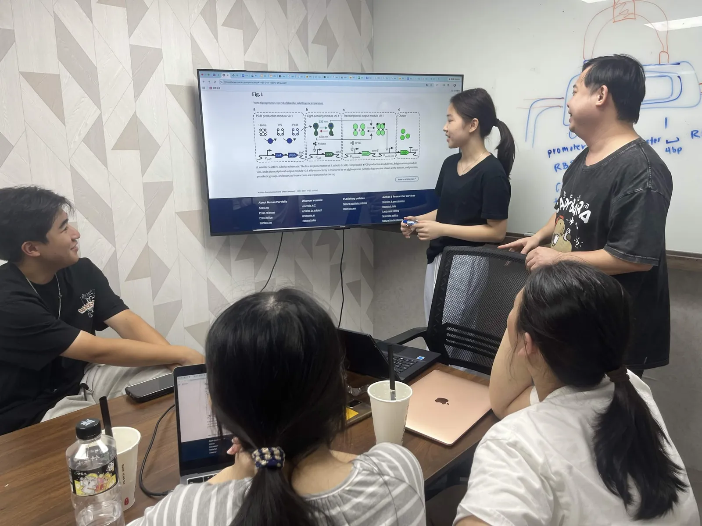
Figure 1. 17 May 2026. Walking the team through the published
CcaSR device: the four dashed boxes on the screen are the four modules this
page then had to build.
Figure 2. 18 May 2026. The whole signal path drawn out in one
evening, from the hardware and its green light on the left, through PCB and
CcaS, to the protectant leaving the cell. Every cycle in the next section is
an attempt to turn this drawing into DNA.
Show details: the kit, the primer tail and the assembly levelsWhy the build moved into the SubtiToolKit, and the four-element tail every part we added carries.
The circuit was first designed to the MoClo 2.0 standard [3] as
whole-gene synthesis. That attempt produced a screen our own records
describe three different ways (see cycle 1), and what every version
agrees on is that Golden Gate efficiency stayed low. A professor supplied
the SubtiToolKit [4], a Golden Gate kit written for
B. subtilis and other Gram-positive bacteria, and every
subsequent cycle is inside that kit. The MoClo constructs did not go to
waste: they became the templates the STK-compatible parts were amplified
off.
The kit ships promoters, ribosome binding sites and terminators. It does
not ship ho1:pcyA, ccaSm3, ccaR, the
secretion peptides or any of the protectants. Nine parts had to be turned
into Level 0 entries, and every primer that did it is built the same
way, so one explanation covers all of them.
Element
Sequence
What it does
5′ spacer
ATATAT
Gives the restriction enzyme something to bind to near the end of a linear fragment, so the cut is efficient.
BpiI site
GAAGAC
Level 0 entry into pSTK-0. BpiI cuts outside its own recognition sequence, so digestion leaves a 4 bp overhang that directs the fragment into the backbone and takes the tail with it. Our SnapGene maps label the same site BbsI; BpiI, BbsI and BpuAI are isoschizomers.
BsaI site
GGTCTC
Level 1 assembly. BsaI generates the inner 4 bp overhang, and that overhang is what fixes the part’s position and orientation inside the Level 1 vector.
Annealing region
part-specific
Matches the start codon or the 3′ end of the coding sequence.
The kit’s syntax is what makes an assembly directional:
AGAG promoter ACAT, ACAT ribosome
binding site TATG, TATG coding sequence
GACA, GACA terminator ACGG. BpiI is
used only for Level 0 entry, where it drops the fragment into
pSTK-0 in place of an sfGFP dropout cassette, which is why a
white colony on a blue plate is the first thing we look at. BsaI is used
only at Level 1, and then BpiI again joins four Level 1 modules
into one Level 2 plasmid.
Figure 3. The ho1:pcyA amplicon, 1,549 bp, with
BpiI outermost at 14 and 1,531 and BsaI inside it at 25 and 1,520.
Figure 4. The csn:ACCD amplicon, 1,195 bp, the
same tail at both ends and the 6×His tag inside the 3′ end.
The secretion peptide and the protectant are amplified as one part, so
the fusion cannot come out of the assembly in the wrong order.
Genetic circuit: six cloning cycles
Only two of the six cycles changed the DNA design itself. The other four
changed how that DNA was cloned, and each one is a change applied to all
four modules at once, which is why the cycles are numbered across the
circuit and not within a module.
Closed the cycle answered its own question.
Named failure it ended on a specific failure, and that failure caused the next cycle.
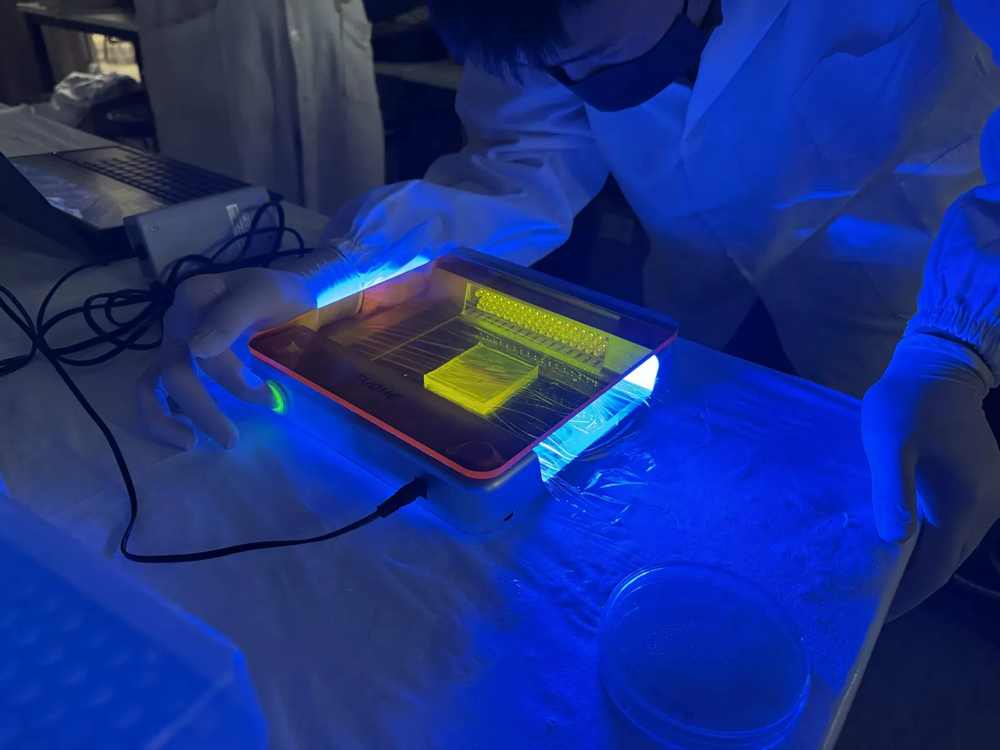
Figure 5. 10 June 2026. Reading a colony PCR on the blue
transilluminator. Most of the findings in these six cycles came off gels read
like this one.
Cycle 1 · Chloe · MoClo 2.0 Named failure
MoClo 2.0 gave a screen full of background, and the kit that replaced it came from the authors of the system
Result
High background on the screen: empty vectors and off-target bands, with Golden Gate efficiency low throughout.
Changed next
The whole build moved into the SubtiToolKit, and an intermediate cloning step went in ahead of Level 1.
DDesign
Build the circuit as whole-gene synthesis in the MoClo 2.0 kit [3]: every part given a custom primer pair carrying type IIS sites, four transcription units at Level 1, and a multi-gene circuit at Level 2.
BBuild
Purified PCR product went straight into a Golden Gate reaction with the Level 1 destination vector pJUMP-29, with no verified Level 0 stage in between.
TTest
Transformants were screened by colony PCR. Cloning efficiency was low and the screens were inconsistent.
LLearn
Going into Level 1 straight from unverified PCR product makes a failed assembly and a PCR artefact look the same, so an intermediate cloning step had to come first.
Figure 6. The MoClo 2.0 Level 1 screen, from the
21 September writing document. It reaches us with no lane map, no
date and no expected sizes, so it can be shown but not read. The bands
sit at one height across almost every lane, the pattern the learn step
describes.
Show detailsThe full design and build, and the three ways our own records describe this screen.
The coding sequences for the green and red light components,
ccaR, ccaSm3 and the ho1:pcyA
operon, were taken from the CcaS/CcaR characterisation of
Castillo-Hair and colleagues [1] and paired with the cargo sequences
the project needed, LEA, ACCD and BoPep4. To get those into
MoClo 2.0 as transcription units, each module was given a
standard set of regulatory parts, and every part got a custom primer
pair carrying type IIS sites: BbsI and BpiI for Level 0
entry, BsaI for Level 1, each flanked by the standard overhangs.
That hierarchy is the one the build kept, even after the kit under it
was swapped.
The mixtures were transformed into E. coli DH5α and
plated on selective media, screened by colony PCR and read on agarose
for insert size. Colonies with a band near an expected size were
marked for miniprep and a confirming digest. Colony PCR and
restriction digest both came back with high background: empty vectors
and off-target bands that could not be told apart from an assembly
failure or a PCR artefact.
The other half of the fix came from outside the team: a professor
connected to the original paper supplied the SubtiToolKit [4]. That was
luck rather than planning, and it is recorded here as luck.
Cycle 2 · Chloe · 11 June 2026 Named failure
With BsaI-only primers, a failed assembly and a PCR artefact still look the same on the gel
Result
Colonies came up, and gave inconsistent or unconfirmed screens.
Changed next
Verify the donor before assembling with it.
DDesign
Two strategies were written out on 11 June: bridge MoClo into the kit with a linker part at each end, or adopt the kit’s own syntax outright. We took the second, and every construct on this page is built on those overhangs.
BBuild
Primers carried the BsaI site alone, entering Level 1 directly from PCR product, alongside the kit’s own library parts and one sequence-verified donor, pGEM-Teasy-Ho1:pcyA.
TTest
Colonies appeared and the screens were inconsistent. Not written: the 21 September document goes straight from the build into cycle 3, so no gel and no conclusion exist for this attempt.
LLearn
With a raw PCR product as the donor, a wrong band can be a failed assembly or an artefact of the amplification. The next three cycles are all attempts to fix that one problem.
Figure 7. 11 June 2026. The two strategies as they were
argued. Strategy 1 across the middle is the MoClo to STK linker;
strategy 2 below it is the kit’s own basic-part syntax, with
the 1A to 1D transcription-unit overhangs listed on the right. The build
follows the lower half of this board.
Show detailsThe six primers that carried a MoClo part into the kit, and a lesson attributed to the wrong cycle.
The four Level 1 destination vectors came out of the kit
unchanged, one per transcription unit. What had to be made was the
parts to go in them: each coding sequence was re-amplified off the
MoClo construct with a new primer pair, so that a fragment designed
for one standard came out carrying the syntax of the other.
Ho1 F anneals on the start codon of
ho1 and pcyA R past the 3′ end of
pcyA, so the whole operon comes off as one amplicon;
ccaSm3 and ccaR were amplified the same way.
The 29 bp tail is identical on all six. Thirteen primers is the
whole set, described part by part on Parts.
BsaI cut every fragment, T4 ligase closed them, and the mix went into
E. coli DH5α, plated on ampicillin or
chloramphenicol according to which vector the insert was going into.
Colonies were picked and screened, verified clones miniprepped, and
either the plasmid or the liquid culture was sent for sequencing.
Cycle 3 · Sophie C · July 2026 Closed
A pGEM-T Easy intermediate costs a day and removes the ambiguity
Result
Seven coding sequences cloned, screened and sequence-confirmed before any Golden Gate reaction.
Changed next
A marker clash nobody had checked for.
DDesign
Optimise the workflow and leave the genetics alone: the part composition of every module stayed exactly as it was, and only the route into the vector changed.
BBuild
Each coding sequence was amplified and cloned into pGEM-T Easy [5], whose 3′-thymidine overhangs pair with the 3′-adenosine a non-proofreading polymerase leaves, then sequenced before it met BsaI.
TTest
Colony PCR between the T7 and SP6 promoters that flank the insertion site, seven sets, A to G, each with its own expected size.
LLearn
The cost was a day of picking, screening and miniprepping. What that day bought was the end of the cycle 2 problem, where a failed assembly and a PCR artefact looked the same on a gel.
Figure 8. 1 July 2026. All seven pGEM-T Easy sets on one
gel, screened with the T7 and SP6 promoter primers.
Show detailsThe seven sets and their expected sizes, two more screens, and what the sequencing added.
A plasmid is also easier to work with than a linear fragment. A
pGEM-T Easy clone can be purified reliably, screened by colony PCR
and sequence-confirmed before it ever meets the BpiI and BsaI
digestion-ligation reactions, which keeps an uncharacterised PCR error
from propagating into every downstream assembly. Three outcomes were
scored negative and excluded: no band at all, a band at the size of the
empty vector, meaning the vector self-ligated, and a band at any other
size, meaning a truncated or mis-primed amplicon.
Set
Insert
Expected
A
pGEM-Teasy-Csn:Lea
811 bp
B
pGEM-Teasy-Csn:AmilCP
1,000 bp
C
pGEM-Teasy-Csn:Accd
1,372 bp
D
pGEM-Teasy-CcaSm3
1,642 bp
E
pGEM-Teasy-CcaR
937 bp
F
pGEM-Teasy-Ho1:pcyA
1,726 bp
G
pGEM-Teasy-PcpcG2-veg
412 bp
Figure 9. 3 July 2026. The Csn:ACCD, CcaSm3, Ho1:pcyA
and PcpcG2-veg sets, rescreened. The F1 lanes are the
chromophore operon at 1,726 bp.
Figure 10. 8 July 2026. Level 1 and Level 0
screens on one gel: the regulator module at 1,442 bp, the gated
AmilCP cargo at 1,684, the photoreceptor at 1,991, the constitutive
AmilCP cargo at 1,784, and the starred lanes the rebuilt chromophore
module at 2,231.
TA cloning proved a fast and reliable way to generate verified
Level 0 material. Colony PCR alone can only say that an insert of
about the right length is present; it cannot rule out a point mutation
or a small indel introduced during amplification. Fidelity was
confirmed by sequencing, and no restriction digest was run at this
stage, because correct band size plus full-length sequencing already
answers both questions the digest would have answered.
Figure 11. 23 July 2026. The full miniprep protocol,
eighteen numbered steps, written out on the back and sleeves of a lab
coat. Every verified donor on this page went through those steps.
Cycle 4 · Sophie C · 14 August 2026 Named failure
Both pGEM-T Easy and every Level 1 destination vector carry ampicillin
Result
The intermediate that fixed cycle 2 could not be selected against at Level 1. Rebuilt on the kit’s own entry vector, all three Level 0 screens came back clean.
Changed next
Repeated regulatory parts across the modules became a stated recombination worry.
DDesign
A compatibility problem found after the fact: carryover donor vector is normally selected away at the transformation step, and with a shared marker it is not, so background colonies survive selection.
BBuild
Coding sequences were amplified with the full BpiI and BsaI tail and cloned directly into the kit’s pSTK-0C entry vector, putting chloramphenicol on the donor and ampicillin on the destination.
TTest
Three Level 0 screens on 14 August, all clean at their expected sizes, and three clones from each went to liquid culture.
LLearn
The marker clash was gone. What replaced it was a worry about the genome: several modules share Pveg, RBS0 and B0015, and B. subtilis recombines homologous sequence readily.
Figure 12.pSTK-0C-Csn-Lea, S1 to S24, screened with
Csn F and STK-seq-rv at 785 bp. S2, S10 and S16 went forward.
Show detailsThe two BoPep4 screens from the same day, and the redesign this cycle handed to cycle 6.
Only the coding sequences that had not already been cloned in
cycle 3 were affected; the ones already in pGEM-T Easy were
still usable at Level 1.
Figure 13.pSTK-0C-SamyQ-Bopep4-v2t1, Q1(1) to
Q1(19), and v2t2, Q2(1) to Q2(4), both at 536 bp
with STK-seq-fw and STK-seq-rv. Q1-4, Q1-10 and Q1-19 went to
liquid culture.
Figure 14. The second half of the same screen, Q2(5) to
Q2(13), also at 536 bp. Q2-5, Q2-7 and Q2-13 went forward.
Once all four modules sat in one cell, long stretches of identical
sequence could give recombination something to act on, and the
CcaS/CcaR signal path is exactly what would be damaged. The redesign
written at the end of this cycle is one line: diversify the promoter,
ribosome binding site and terminator across the modules so that no two
of them share a long identical stretch. That is what cycle 6 was
run on.
Cycle 5 · Chloe · July to August 2026 Closed
Every light-gated cargo was also built constitutively, so a negative result has one explanation fewer
Result
Five constitutive cargoes built and screened, and the ACCD strain carried into the reactor.
Changed next
Building five modules on the same promoter, ribosome binding site and terminator is what made the recombination worry concrete.
DDesign
One fixed format, five cargoes, no choice made in advance: constitutive Pveg, an EEBD and RBS0 ribosome binding site, a secretion signal fused to the protectant, and B0015. Holding all four constant is what makes the cargoes comparable.
BBuild
Each Level 0 part went into pSTK-0-sfGFP under BpiI and was sequence-verified, then the verified cassettes were joined under BsaI into pSTK-EXP1-sfGFP, the kit’s shuttle vector.
TTest
The 16 July panel screens the gated and constitutive versions of the AmilCP cargo side by side, clones G3 and H10. H10 went to sequencing and came back with no mutations.
LLearn
Testing a protectant and a light switch at once means a negative result explains nothing. The constitutive twin is what let the protein work start before the switch existed.
Figure 15. The output panel. Lane 2 is the CcaR module; lanes
3 to 5 the Exp2 spacer series; lane 6 the gated AmilCP construct,
clone G3; lane 7 the constitutive one, clone H10 at about 2.2 kb.
Show detailsThe five-cargo library, the LEA arm that failed its digest, and what a colony PCR in B. subtilis can and cannot say.
Every cargo built behind PcpcG2-veg in module 4 was
also built this way, which is the second reason the series exists. All
of them went into pSTK-EXP1-sfGFP, so the same plasmid
could be screened for expression in E. coli and then
carried into B. subtilis unchanged. Four parts the library
needed were not in the kit at all, Csn, ACCD, LEA and BoPep4, and each
got a custom primer on the standard four-element tail.
All five output candidates were screened the same way. Clones giving a
single clean band at the expected size were electroporated into
B. subtilis and screened by colony PCR again, which
returned sharp bands at the expected sizes in the new host. Those
single colonies went into liquid culture and then up to reactor scale.
The protein this strain makes, and where it ends up, is the
protectant track.
Figure 16. 25 July 2026. The LEA cargo in both versions:
G1 to G12 gated at 1,375 bp, H1 to H10 constitutive at
1,372 bp. G2 carried the right band and then failed its digest,
which is the finding in module 4.
The five constitutive constructs
Figure 17. The shuttle build: the same cargo as module 4, no
light gate, and a vector that replicates in both organisms.
The five constructs built in pSTK-EXP1-sfGFP, and where each one got to.
Cycle 6 · Sophie C · 30 July to 19 September 2026 Closed
Module 1’s repeats came out, and then the recombination premise did not survive
Result
The rebuilt module sequenced positive on three clones, and three Level 2 clones were checked at all three internal junctions on 19 September.
Changed next
The light plate run that would test the switch. It has not happened.
DDesign
Third version of the kit design, aimed at sequence redundancy: diversify the regulatory parts so the four modules stop reusing identical promoters, ribosome binding sites and terminators.
BBuild
Module 1 took the change, on PtagC+RBS and the L3S2P21 terminator, same coding sequence. The regulator kept everything it had, which is why it became the module the others were diversified away from.
TTest
Eleven of twelve colonies carried the expected 1,833 bp band on 30 July; A1, A2 and A3 sequenced positive the next day. Every colony of the galactosidase arm on the same gel failed.
LLearn
Half the motive was retired by asking somebody who knew: Professor Huang’s view was that recombination in Bacillus is not the problem we thought, so module 4’s terminator went back where it started.
Figure 18. 19 September 2026, the strongest cloning evidence
the project has. Three ACDI clones, X1, X3 and X9, across three
junctions: junction A, L2 pcyA F with
L2 CcaSm3 R, 375 bp; junction B,
L2 CcaSm3 F with CcaR R, 632 bp; junction C,
CcaR F with Csn R, 661 bp. Nine correct junctions say the
four modules are joined in the right order in three separate clones.
They say nothing about the sequence between the junctions.
Show detailsWhat was varied and what was not, the rebuilt module, the two Level 2 devices, and three contested records.
The team’s own cloning-progress table is the clearest statement
of what was varied, with the three regulatory slots pulled apart. Only the promoter, the ribosome binding site and the terminator
ever moved; no coding sequence changed in this cycle.
Module
Round
Promoter
RBS
Terminator
What it turned on
1 · PCB production
first
Pveg
RBS0
B0015
No successful clone on the first way of cloning it.
second
PtagC
RBS
L3S2P21
The second round gave a successful clone. Promoter strength stays pending because the first version was never obtained.
2 · light sensing
first
PlepA
RBS0
B0015
Promoter strength. Both versions were built, and both exist.
second
PliaG
RBS0
B0015
PliaG is the one sequencing confirmed first.
3 · transcriptional output
only
Pveg
RBS0
B0015
No change at any point.
4 · output
only
PcpcG2
RBS0
cold D, then back to B0015
The terminator swap was made against recombination and then undone.
Figure 19. 30 July 2026. Group A is the rebuilt
chromophore module screened at 1,833 bp. Group L is the
galactosidase arm at 3,626 bp, and every L lane failed.
Figure 20. 1 September 2026. The junction check that
followed the insert-to-vector ratio sweep.
Module 4: Original terminator cold D (Failure) to B0015. Because
Professor Huang thinks recombination in Bacillus is not the
issue, we changed our terminator back to our original plan, B0015.
So the cold double terminator survives as an artefact of a redesign we
undid. The other half of the motive stands on its own: module 1
sequenced clean on Pveg and RBS0 and gave no expression
signal, and the rebuild is the part of this cycle we kept.
Level 2, and a stoichiometry change
With module 1 rebuilt, the four modules went into Level 2.
Three consecutive Golden Gate rounds returned nothing with no design
change between them. On 28 August the insert-to-vector ratio was
swept at 1:5 and 1:7 and both returned positives; on 1 September
two clones were confirmed across three internal junctions at once.
Module 2 was built on two promoters and both survived, so the
Level 2 assembly was run twice: ACDI carries the
PlepA photoreceptor and ABDI the PliaG
one. Until an induction curve exists there is no way to choose between
them, so both were carried.
Figure 21. 19 August 2026. Both devices on one gel across
the long CcaR F to Csn R span at 1,424 bp: X1 to X8 are
ACDI, V1 to V8 are ABDI. J1 to J8 on the right are the constitutive
ACCD shuttle construct after electroporation, screened at
1,195 bp.
ABDI is the weaker of the two: clone V7 has been checked one junction
at a time on separate gels and never all three at once. No Level 2
construct has been sequenced end to end, and the build record’s
Level 2 sequencing cell is empty for both devices.
The four modules as built
The cycles above are changes to the cloning strategy. This is what those
changes produced, module by module. Three of the four were rebuilt at least
once; the regulator, module 3, never changed.
Module 1 · PCB production · Sophie C
Pveg and RBS0 sequenced clean and expressed nothing, so the module was rebuilt on PtagC and L3S2P21
Sequencing came back with no signal, so the promoter, ribosome binding site and terminator were all replaced.
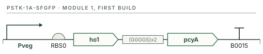
Figure 22. The first build. Sequencing on this one returned no signal.Figure 23. The second build, screened at 1,833 bp on 30 July and the one that went into Level 2.
A regulatory combination that works in its original design does not
necessarily express at the same level in a different backbone next to
different parts, and chromophore supply is what the whole light-sensing
path depends on. The source paper runs this unit on PrpsD and
the MF001 ribosome binding site; we had substituted the stronger
Pveg and RBS0 to push chromophore supply up, and that
substitution is what had to be undone.
Show detailsHow the operon was amplified, the Level 1 screen, the sequenced maps and the primer pair.
The chromophore operon ho1:pcyA was not in the kit. It was
amplified as a single fragment off the existing MoClo construct, with
Ho1 F annealing at the start codon of
ho1 and pcyA R at the 3′ end of
pcyA. The template was the gene-synthesis plasmid pTwist
Amp High Copy; Pveg was ordered from IDT as a fragment. Both
went into pGEM-T vectors first, were sequence-confirmed, and only then
met BsaI. Colony PCR on the Level 1 sets put A1(3), A1(4), A1(8),
A1(9) and A2(6) at about 1.9 kb, and those five went to
sequencing. The rebuild was screened at 1,833 bp on 30 July,
with A1, A2 and A3 all sequencing positive.
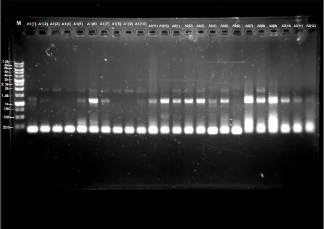
Figure 24. The Level 1 screen on the first build. A1(3),
A1(4), A1(8), A1(9) and A2(6) carry the expected band; the rest
either have nothing at that height or show non-specific product.
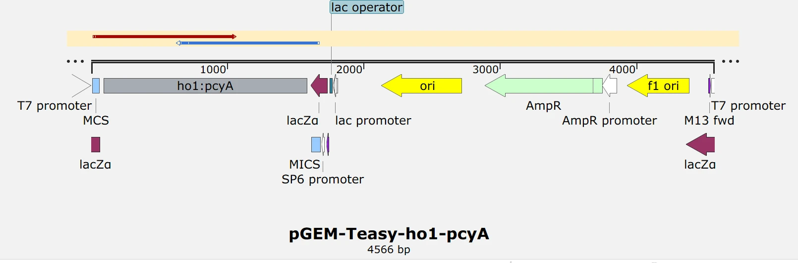
Figure 25. The sequence-confirmed donor,
pGEM-Teasy-ho1-pcyA, 4,566 bp. The T7 and SP6
promoters flanking the insert are the primer sites every
pGEM-T Easy screen on this page uses.
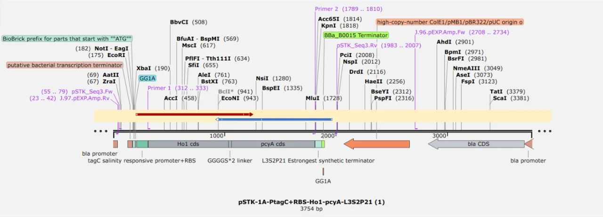
Figure 26. The rebuilt module as sequenced, 3,754 bp. The
tagC salinity-responsive promoter and its ribosome binding site
arrive as one part, so RBS0 disappears from the name.
Unwritten · Sophie C
The expected amplicon size for the Level 0 screen is marked
(add the band size) in the source text. And the source sentence
behind the finding above is sequencing results showed that our
request had no signal, which reads as a failed sequencing reaction
rather than an expression result. Those are different failures with
different remedies, and only one of them is a reason to change a
promoter.
Module 2 · Light sensing · Chloe
Two promoters built in parallel, and PliaG is the one sequencing confirmed
All six colonies across both constructs gave a single clean band at the expected size, and PliaG came back correct with no mutations.
Figure 27. Both variants share everything except the promoter.
Building two promoters at once was the point. PliaG and
PlepA differ in strength, and until there is an induction curve
there is no way to know which one puts CcaS at a useful level, so both
exist and the choice stays open. That choice is also why there are two
Level 2 devices.
Show detailsWhere the design leaves the paper it came from, the screen, the sequenced map and two open questions.
ccaSm3 is the engineered green-light photoreceptor and it
was not in the kit either. The same tail that worked on
ho1:pcyA was reused verbatim, with only the annealing
region changed. The amplicon went into pGEM-T to make the Level 0
part, then into two parallel BsaI reactions with either
PliaG or PlepA, RBS0 and B0015, into
pSTK-1B-sfGFP.
This is also where the design leaves the paper it came from.
Castillo-Hair et al. [1] put ccaS under the
xylose-inducible PxylA and had to strip a 59 bp
untranslated region, a truncated xylA reading frame and a
premature stop codon out of it. We used constitutive promoters from the
start, because the green and
red light signal is our input and a
chemically induced sensor would add a second one.
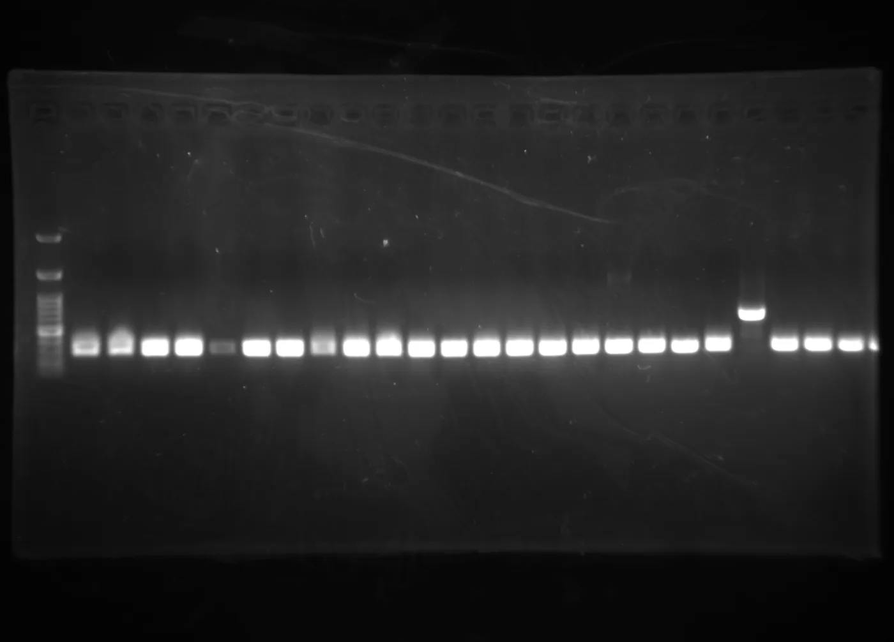
Figure 28. 25 June 2026. E1 to E3 are the
PlepA construct and F1 to F3 the PliaG one,
screened alongside the other three modules on the same gel.
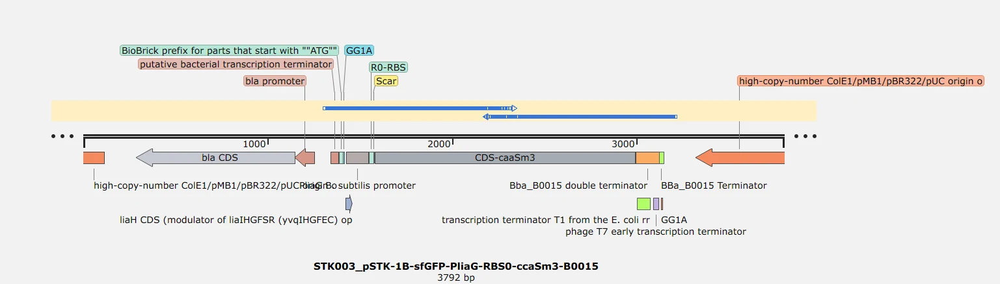
Figure 29.pSTK-1B-sfGFP with PliaG,
3,792 bp, as sequenced. The B0015 double terminator resolves as
two annotated parts, because that is how it is built.
Unwritten · Chloe
The second way this module diverges from Castillo-Hair et al. is
written as Second… [xxx]. And the design text names sRBS2
and MF002 as the ribosome binding sites while both construct names say
RBS0; one of the two is wrong and the page follows the construct names.
Module 3 · Transcriptional output · Chloe
One clone, #B2, was all this module ever needed
Sequencing returned one correct construct, clone #B2.
Figure 30. The regulator, on the same constitutive promoter as the first build of module 1.
CcaR is the response regulator of the two-component pair. When the
activated photoreceptor CcaS-m3 passes it a phosphoryl group, CcaR binds
its cognate promoter and turns the light signal into transcription. This
is the module that gave the least trouble, and the only one never rebuilt:
it kept Pveg, RBS0 and B0015 through cycle 6, so it became
the module the other three were diversified away from.
Show detailsThe sequenced map, the primer pair, and two sentences the source never finished.
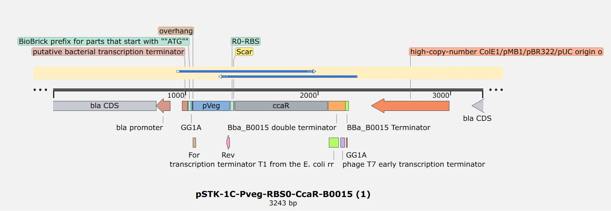
Figure 31.pSTK-1C with Pveg, RBS0,
CcaR and B0015, 3,243 bp, clone #B2 as sequenced.
Unwritten · Chloe
The build sentence in the source stops at We assembled the parts into
the pSTK-1C-sfGFP destination vector using, and the learn field
reads We learned that.
Module 4 · Output · Sophie C
Three protectant cargoes behind one light-gated promoter, and the LEA arm came back empty
Clone G2 had the right band on colony PCR and returned the dropout cassette on digest, which means the vector was empty.
Figure 32. The double-struck promoter marks the only light-gated part in the circuit. The cargo slot takes ACCD, AmilCP or Lea without any other change.
The output module expresses a protectant fused to a secretion signal
peptide, so the product leaves the cell. Which protectant was left open on
purpose: one of the project’s goals is that a user picks the cargo.
The ACCD arm went the other way from LEA. I3 and I6 carried the expected
1,588 bp band on 22 July, went to liquid culture, and sequenced
with no mutations.
Show detailsThe three constructs, the overhangs that make the assembly directional, the digest that caught LEA, and two contested records.
#
Architecture
Cargo
Where it got to
1
PcpcG2-veg → EEBD → RBS0 → Csn:AmilCP → B0015
Chromoprotein, visible on a plate with no substrate and no cofactor
Clone G3 on the 16 July panel.
2
PcpcG2-veg → EEBD → RBS0 → Csn:ACCD → B0015
ACC deaminase, which lowers the ethylene a stressed plant makes
I3 and I6 sequenced with no mutations.
3
PcpcG2-veg → EEBD → RBS0 → Csn:Lea → B0015
A late embryogenesis abundant protein
Right band, empty vector on digest.
EEBD arrives from MoClo as a bracketed element: two recombination sites
around a B0015 terminator, with the MF001 or RBS0 ribosome binding site
after it. On the construct maps it reads as one box because it is
ordered and amplified as one part.
The overhangs are what make the assembly directional
Every forward primer in this module shares the CTGA and
GAGG Level 0 pair for BpiI entry. The inner BsaI
overhangs decide position. Csn F carries
TATG, putting the secretion peptide’s start codon
exactly at the coding-sequence position, and ACCD R,
AmilCP R and Lea R all carry
TGTC, because every protectant ends at the same
coding-sequence to terminator junction. That shared junction is what
makes the cargo interchangeable.
Figure 33. 22 July 2026. The light-gated ACCD construct
at 1,588 bp. I3 and I6 are the two clones that went forward.
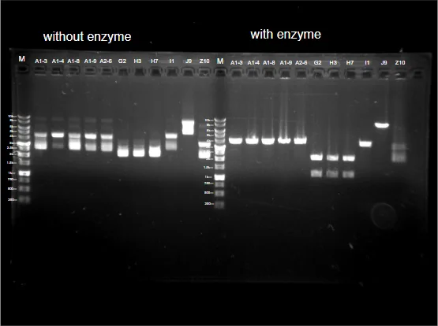
Figure 34. 27 July 2026. Uncut against cut, side by side
on one gel. Without both halves a digest says very little. J9 and I1
cut as predicted; G2 returned the dropout cassette.
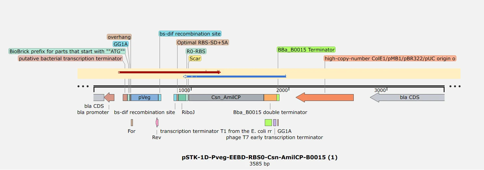
Figure 35. The chromoprotein arm as sequenced, 3,585 bp.
EEBD resolves into its parts on the map: two bs-dif recombination
sites bracketing a terminator, then RiboJ and the ribosome binding
site.
Unwritten · Sophie C
The source says four constructs were designed and then lists three.
Either a fourth construct is missing from the table or the count is
wrong.
Level 1 build record · thirteen assemblies, A to M
Thirteen Level 1 assemblies were attempted and three never produced a clone
The team kept a ledger of them, lettered A to M, with the colony that went
forward, the date it was screened and the date it was sequenced. The table
is that ledger, with the assembly length from the parts sheet added where
the sheet carries one. The part-by-part description of what each construct
contains is on Parts.
Label
Level 1 construct
Vector
Clone
Colony PCR
Sequenced
Assembly
A
PtagC+RBS → Ho1:pcyA → L3S2P21
pSTK-1A
A1, A2, A3
30 Jul
31 Jul
3,754 bp, screened at 1,833
B
PliaG → RBS0 → CcaSm3 → B0015
pSTK-1B
B2
24 Jun
3 Jul
3,792 bp
C
PlepA → RBS0 → CcaSm3 → B0015
pSTK-1B
C6, C9
22 Jul
24 Jul
3,828 bp
D
Pveg → RBS0 → ccaR → B0015
pSTK-1C
B2, B4
26 Jun
1 Jul
3,243 bp
E
PcpcG2-veg → EEBD-RBS0 → Csn:AmilCP → B0015
pSTK-1D
G3
24 Jun
3 Jul
not recorded
F
Pveg → EEBD-RBS0 → Csn:AmilCP → B0015
pSTK-1D
H10
26 Jun
3 Jul
7,395 bp, contested
G
PcpcG2-veg → EEBD-RBS0 → Csn:LEA → B0015
pSTK-1D
Unsuccessful in the ledger. Right band on colony PCR, dropout cassette on digest.
3,296 bp
H
Pveg → EEBD-RBS0 → Csn:LEA → B0015
pSTK-EXP1
Screened at 1,372 bp on 25 July; still in assembly on the parts sheet.
I
PcpcG2-veg → EEBD-RBS0 → Csn:ACCD → B0015
pSTK-1D
I3, I6
27 Jul
28 Jul
3,757 bp
J
Pveg → EEBD-RBS0 → Csn:ACCD → B0015
pSTK-EXP1
J9
27 Jul, digest
28 Jul
not recorded
K
Pveg → EEBD-RBS0 → SamyQ-TAT-HA-AmilCP → B0015
pSTK-EXP1
D10, D14
9 Jul
14 Jul
7,464 bp
L
3P → EEBD-RBS0 → GanA-Gala → L3S2P21
pSTK-EXP1
Unsuccessful in the ledger. All twelve colonies failed on 30 July, and the September gels show positives.
screened at 3,626 bp
M
PcpcG2-veg → EEBD-RBS0 → GanA-Gala → L3S2P21
pSTK-1D
Unsuccessful in the ledger.
not recorded
Two things about reading this table. The clone identifiers do not track the
construct letters, so construct D’s clone is called B2 and
construct E’s is called G3; the letters were assigned to gel
lanes on the day and the ledger letters came later. And a few of the colony
PCR dates run a day behind the date written on the gel photograph itself,
which is the difference between the reaction and the imaging.
Show details: three places the ledger, the parts sheet and the gels disagreeTwo lengths for one construct, three statuses for three constructs, and an empty Level 2 sheet.
Construct F has two lengths. The parts sheet puts it in
pSTK-1D-sfGFP at 7,395 bp; the sequenced plasmid map
of the same construct in the same vector, figure 35, reads
3,585 bp. pSTK-1D-sfGFP is a 3,120 bp backbone
and pSTK-EXP-1-sfGFP is 6,929 bp, so 7,395 is the
length this insert would have in the shuttle vector and not in
pSTK-1D. Either the vector column or the length column of
that row is wrong.
Constructs G, L and M are unsuccessful, in assembly, or positive.sequencing positive clone.docx writes unsuccessful
against all three and leaves their clone numbers blank; the parts sheet
gives G, H and L the status Assembly; and the gels show G7, G8
and G9 going to liquid culture on 4 August, L1 and L3 running at
1.3 kb on 18 August, twenty-four L clones at 3,535 bp on
5 September and M9 at 2,837 bp on 9 September. The newest
record is the most positive one, which is the opposite of what the table
above says. The table follows the ledger because that is the document
the team wrote as its ledger, and the disagreement is marked here rather
than edited away.
The parts tracker has no Level 2 in its Level 2 sheet.PARTS PROGRESSION FINAL!!.xlsx holds exactly one row there,
status Not started, and neither ACDI nor ABDI appears anywhere in
that workbook, although both were assembled, screened across August and
junction-checked in September on fourteen gels. The file named FINAL is
the most out-of-date record of Level 2 we have, and it is the file
the assembly lengths above come from.
Protectant and peptide
The light switch decides when the cells make something; this track decides
what they make, and whether any of it leaves the cell. Two of its three cycles happened
on a computer, and the most useful thing they produced was a list of claims we
had to retract, one of which had already gone out as a DNA order.
Cycle 1 · Olivia, Sophia · May to June 2026 Named failure
Seventeen truncations found the sequence, and the codon optimiser’s objective could be gamed
Result
Interface confidence peaks at residues 9 to 23, and the top-ranked codon design lifted one term while leaving the Shine-Dalgarno core worse than wild type.
Changed next
The objective function was replaced by a bottleneck, a 7.9-fold gain, and then the whole pipeline was audited.
DDesign
Rather than pick one truncation and defend it, build the whole ladder: every N-terminal truncation of BoPep4 from 1 to 23 down to 17 to 23, docked against both Arabidopsis receptors.
BBuild
Seventeen fragments, two receptors, thirty-four complexes in HADDOCK and independently co-folded in AlphaFold3; then roughly 50,000 random synonymous coding variants per payload, each fully re-folded.
TTest
Confidence peaks at 9 to 23 and the drop to a non-binder happens between 13 to 23 and 14 to 23. The best-scoring codon design left the Shine-Dalgarno core more occluded than the wild type.
LLearn
A sum lets an optimiser buy a large gain in one term with a total loss in the other, and the ribosome needs both. Ranking moved to the weaker of the two terms.
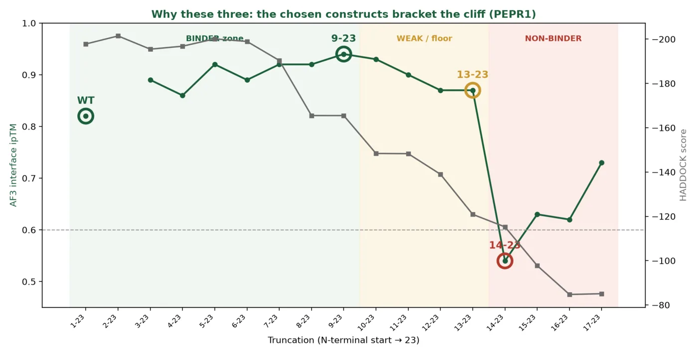
Figure 36. The truncation ladder measured two ways, with the three
fragments chosen for wet-lab testing marked. The collapse between 13 to 23
and 14 to 23 is what the three picks were chosen to straddle: predicted
full activity, predicted reduced, predicted dead. Three working fragments
would only have told us the model likes short peptides.
Show detailsThe docking table, the initiation bottleneck, and the ACCD cassette recoded on the same argument.
BoPep4 is a 23-residue plant elicitor peptide from
Brassica, designed to act on the Arabidopsis receptor kinases
PEPR1 and PEPR2. Its archetype is AtPep1, whose complex with PEPR1 is
solved at 2.59 Å. Both are 23-mers, and the three residues a
2008 structure and activity study found critical, Arg9, Ser15 and
Gly17, are conserved at the same positions, along with the C-terminal
Asn23.
Fragment
Length
ipTM, PEPR1
Interface PAE
Buried area
Call
1 to 23, wild type
23
0.82
1.83 Å
2,754 Ų
binder
9 to 23
15
0.94
1.41 Å
2,080 Ų
binder
13 to 23
11
0.87
2.49 Å
1,426 Ų
weak
14 to 23
10
0.54
8.85 Å
1,346 Ų
non-binder
15 to 23
9
0.63
5.09 Å
1,194 Ų
non-binder
With the sequence fixed, the only free variable in the cassette is
synonymous codon choice. We optimised for base-unpaired probability at
37 °C on two regions, the fifteen bases from the start codon
and the Shine-Dalgarno core, with a gene that works,
ho1, as the reference point at 0.681. The same pathology
appeared in all four payloads: top-ranked designs with start
accessibility near 0.98 to 0.99 and a Shine-Dalgarno core around 0.014
to 0.055. On BoPep4 the bottleneck went from 0.067 to 0.528 once the
objective became the weaker term, a 7.9-fold improvement at a codon
adaptation index of 0.78. Optimising for codon usage alone gives an
index of 0.87 to 0.89 and a bottleneck of 0.054, essentially fully
occluded, in all four cases.
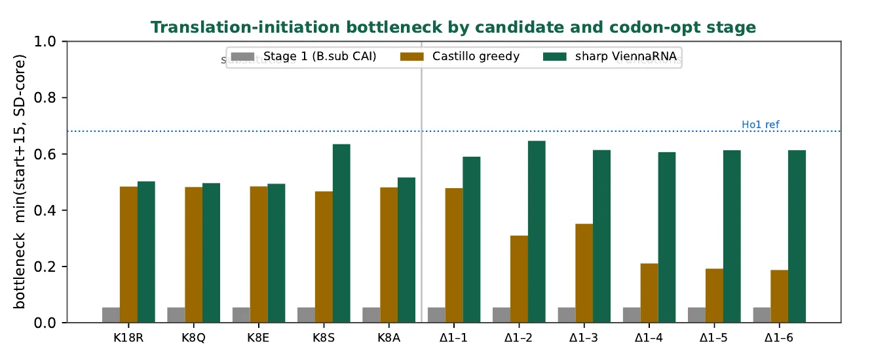
Figure 37. The initiation bottleneck for each candidate under
three strategies. Grey is codon-usage optimisation alone, flat at
0.054 across every candidate despite carrying the highest codon
indices in the set. The dotted line is the ho1 reference.
The ACCD cassette was recoded on the same argument
ACCD_v2_top1 is an ACC deaminase construct that is optimized for
Bacillus subtilis 168, and is similar to the standard CcaSR
construct except for the first 15 codons that we recoded to enhance the
mRNA secondary structure near the translation start site. We optimized
the first 15 codons of the coding sequence to enhance translation by
testing synonymous substitutions. The N-terminal ACCD amino-acid
sequence remains NLNRFERYPLTFGPS. By comparing different results, we
selected the v2 recoded sequence, which improved start-site
accessibility (start+15 = 0.773) while maintaining a relatively high
codon adaptation index (CAI = 0.75).
The substitutions were at residues N1, L2, N3, F5, R7, P9, L10, T11,
F12, G13, P14 and S15, and the construct also carries a C-terminal
6×His tag for protein detection and a B0015 double terminator.
The full design record is on
Peptide Design and the part entries
are on Parts.
Cycle 2 · Olivia, Sophia · July to 16 August 2026 Named failure
An audit retracted five claims, and a flood fill showed the tag was on the wrong end
Result
Every cassette already at synthesis carried a 6×His tag on the end of the peptide that has nowhere to go.
Changed next
Three constructs reordered on 16 August with the tag on the N terminus, and a chemically synthesised peptide bought alongside them.
DDesign
Two things in parallel: a formal audit of every docking campaign scored against its own positive controls, and molecular dynamics on the receptor, with a four-part acceptance test written down before any run started.
BBuild
Nine runs of 30 ns each, 270 ns in total and 13,500 frames, plus a flood fill of the receptor surface measuring how much room a fusion tag has to escape at each end of the bound peptide.
TTest
Fusing 6×His to Asn23 spends the carboxylate that clamps receptor Arg487: the bidentate salt bridge goes from 100 % of frames to none, and the charge centres move from 3.98 to 20.07 Å.
LLearn
The tagged peptide passed our own pre-registered gate anyway, because the gate read backbone stability and contact counts. A metric that cannot see the functional contact will score its loss as break-even.
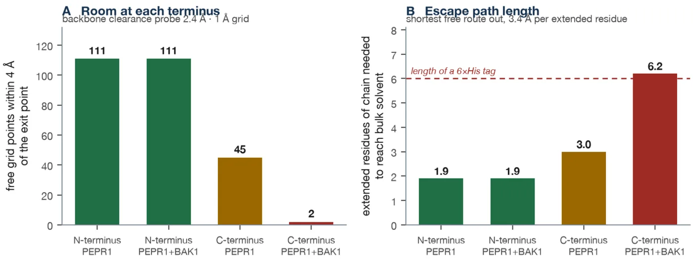
Figure 38. Free space at each terminus, with and without the
co-receptor BAK1. At the N terminus there are 111 free grid points and a
6.5 Å path to solvent. At the C terminus BAK1 closes the
channel to two grid points and a 20.9 Å escape path, longer
than the tag that has to pass through it. This measurement needs no
docking and no simulation, and it is the one that changed the order.
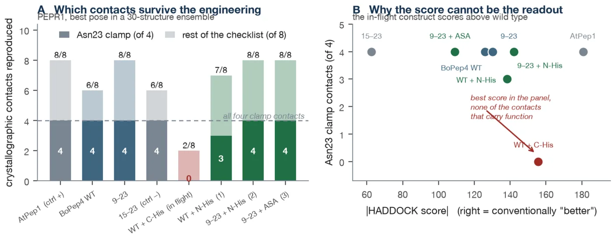
Figure 39. The functional contact against the docking score. The
construct that makes none of the four required contacts scores normally.
This figure is why we stopped reporting docking scores as evidence.
Show detailsWhat the audit retracted, the measurements behind it, and the reorder.
Claim
Status after the audit
Truncation is tolerated to about 9 to 23
holds
Asn23’s free carboxylate clamps Arg487
holds
A C-terminal extension breaks that clamp
new, and strong
K18R is an affinity enhancer
retracted
K8Q is binding-neutral
retracted
Docking independently confirms the AlphaFold3 poses
retracted
Our docking replicates the 2008 structure and activity data
retracted
Docking scores can rank our constructs
refuted
The audit did not confirm the pipeline. Most of our docking runs derived
their restraints from the pose they were meant to test, which makes them
refinement and not confirmation; the truncation cliff correlates with
peptide length at R² = 0.93, so the score is
substantially a length ruler; and on a sixteen-analogue benchmark with
known activities the protocol’s rank correlation is about +0.05.
The whole point-mutation programme went with those retractions, and so
did tandem repetition.
We found the C-terminal problem after ordering. Six cassettes were
already at the synthesis house, every one tagged at the wrong end. Three
constructs, 2,106 bp, were reordered on 16 August with
N-terminal tags, alongside a chemically synthesised 9 to 23 peptide from
a peptide house, which is the only thing that separates the peptide
does not work from we secreted too little to see.
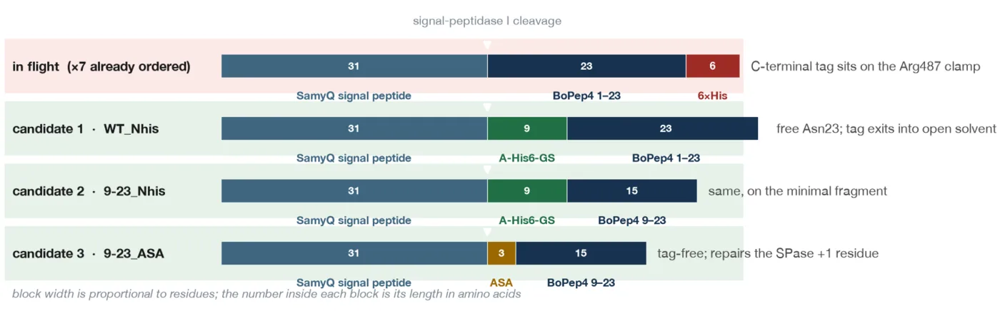
Figure 40. Every BoPep4 cassette drawn to scale. The ones
already at the synthesis house put the tag at the end of the peptide
the receptor reads from; the three ordered on 16 August move it to
the other end.
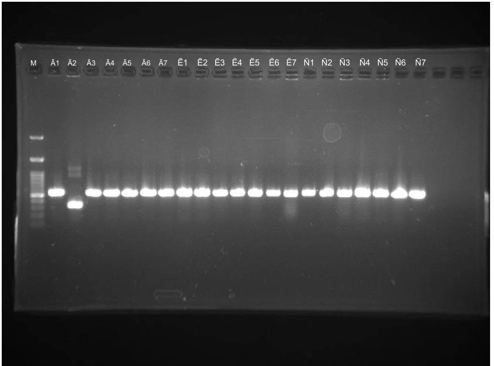
Figure 41. 18 September 2026. The reordered peptide as DNA
in our own hands: three BoPep4 Level 0 variants, seven clones
each, screened at 548 bp. Twenty of twenty-one carried the
expected band. There is no expression, no purification and no assay
behind these clones, and BoPep4 has never been applied to a plant.
Cycle 3 · Chloe, Sophie C · May to September 2026 Open
The protein is found outside the cells once, and the batch that went onto plants carried none of it
Result
One fractionation blot puts ACC deaminase in the supernatant and neither pellet. The 24 August batch check is blank in the lane that was sprayed.
Changed next
Every batch that touches a plant should be blotted first. That gate has been stated and not yet applied.
DDesign
Take the light switch out of the question with the constitutive twin from cycle 5, then sample both sides of the membrane, because a flask has no other side and the reactor does.
BBuild
A voltage window had to be found first: B. subtilis is not easy to electroporate, and colony yield rises from 2.0 to 2.3 kV and collapses by 2.5 kV.
TTest
Three blots on shake-flask cultures, on 2, 7 and 24 August, and a 44-hour reactor time course sampled at nine points from three places at once.
LLearn
Written carefully, the record says the protein was found outside the cells on one occasion. The material that reached the plants was not checked before it was sprayed, and it should have been.
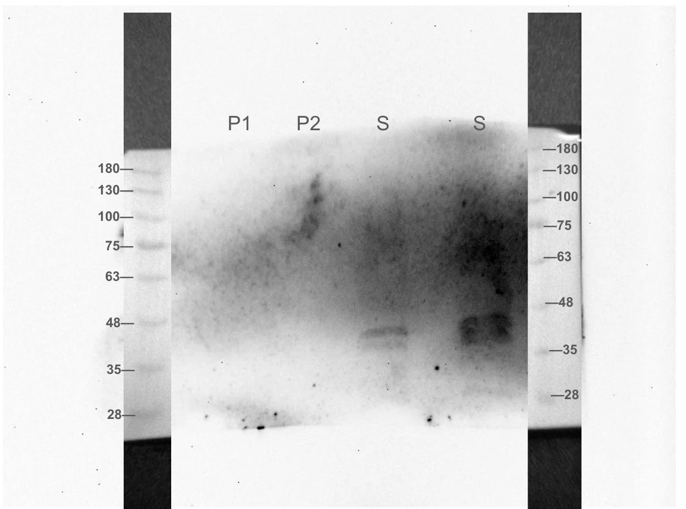
Figure 42. 2 August 2026. ACC deaminase in
B. subtilis, fractionated: P1 total pellet, P2 soluble pellet,
then two supernatant lanes. The bands sit in the supernatant lanes, around
35 to 40 kDa, and both pellet lanes are effectively blank. This is the
only fractionation evidence in the whole archive that the Csn secretion tag
does what it was chosen to do. It is one blot, with no loading control.
Show detailsThe electroporation window, the batch that went onto plants, the 44-hour reactor time course, and a result our records state three ways.
Into B. subtilis
Cells were grown in LB with 0.5 M sorbitol to OD600 0.85 to 0.95,
washed four times in ice-cold sorbitol and glycerol buffer, and
concentrated fortyfold. Pulses were delivered across a 0.2 cm gap
at 25 µF. The first attempt did not survive its first two
pulses: at 2.0 and 1.8 kV with the resistance set to infinity the
cuvette arced and the time constant read zero. Putting 300 Ω
in parallel fixed it and gave a 6.7 ms time constant, and every
later run used that setting.
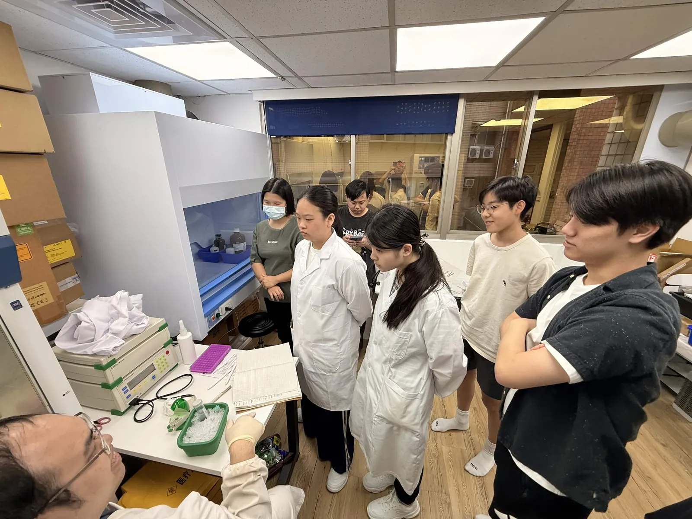
Figure 43. 17 May 2026. Learning electroporation, five days
before the first voltage sweep. The hand on the keypad is setting the
field, and the settings go straight into the notebook beside it.
Date
Field
Colonies, diluted
Colonies, undiluted
22 May
2.0 kV
31
309
22 May
2.1 kV
0
302
22 May
2.2 kV
49
405
23 May
2.1 kV
1,323 and 1,003
23 May
2.3 kV
1,606 and 424
23 May
2.5 kV
37 and 203
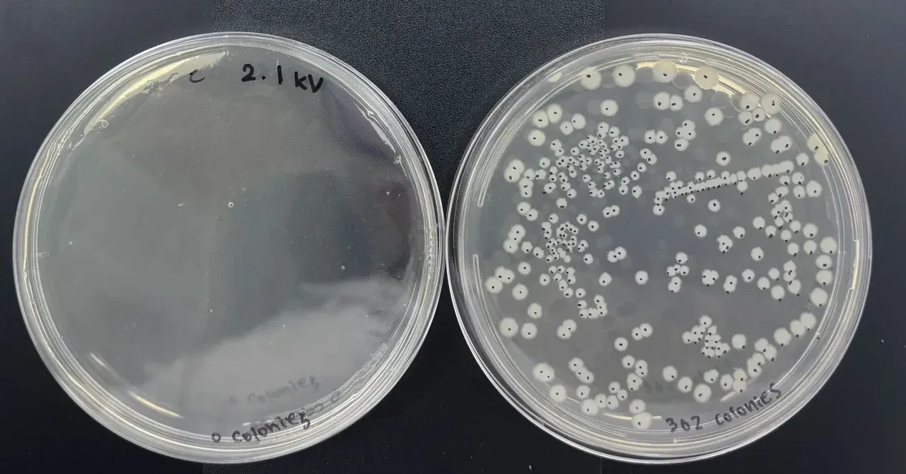
Figure 44. 2.1 kV. Nought colonies on the diluted plate against 302 undiluted; the counts are written on the plates.
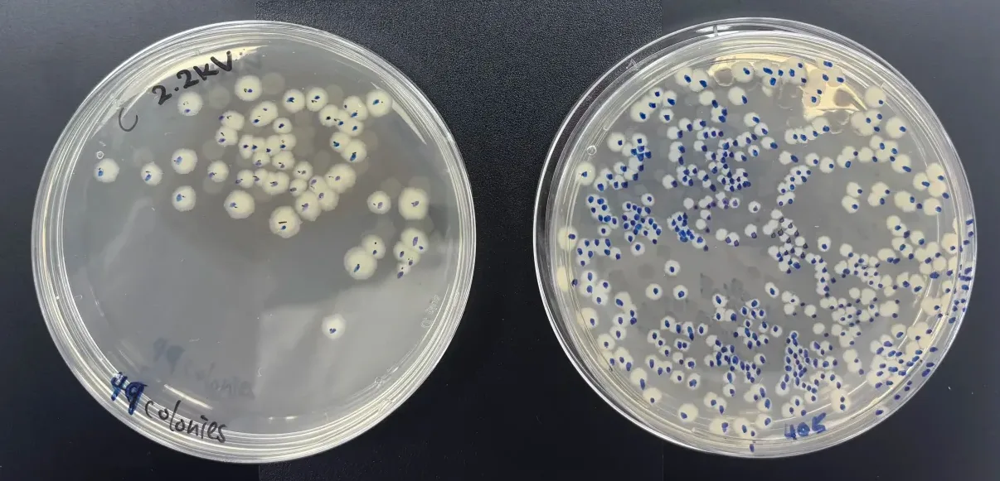
Figure 45. 2.2 kV, 49 against 405, the best yield of the first sweep.
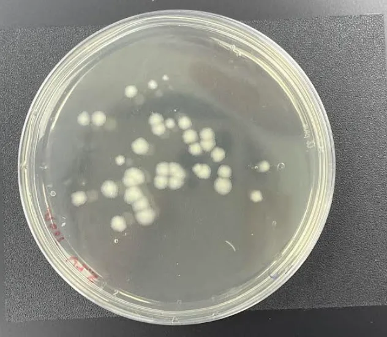
Figure 46. 2.5 kV, about 37 colonies. Past 2.3 kV the yield collapses.
Two of our own records disagree about how many trials that was.
Figures May 2026.pptx heads three slides as trials on 19,
22 and 26 May, and the first two list byte-identical counts under
two different dates, so one of those days either never happened or never
had its numbers entered. It does not touch the finding: the 2.5 kV
collapse is inside one trial, 1,606 colonies down to 37. What it does
mean is that the sweep is single plates per condition and not a
replicated measurement, and no input count was taken, so these are
colony counts and not transformation efficiencies. The plan also calls
for comparing WB800N with strain 168; that comparison has never
been run and every number here is strain 168.
The batch that went onto plants
The 24 August blot is the batch check, and it carries exactly one
band: a sharp, saturated signal at roughly 41 kDa in the lane loaded
with the 18 August culture. The lane loaded with the 23 August
culture, the material that was sprayed onto plants, is blank. The team’s own minute of 26 August states the
consequence plainly:
Originally two day pre-treatment (8/23, 8/24), did Western blot and
found out there’s no ACCD in the B Sub. we are spraying the
plants with.
Figure 47. 24 August 2026, the membrane under white light. Both prestained ladders resolve all eight bands from 180 down to 28 kDa, and that is what lets the next panel carry a weight assignment at all.Figure 48. The exposure of the same membrane. One band at about 41 kDa in the 18 August lane; the 23 August lane is empty. The bright patch immediately above the band is an air bubble under the membrane, and it is a reason to treat even this result carefully.
ACCD in the reactor, 44 hours
The Csn:ACCD construct is the one that went into the
perfusion reactor. Expression was followed over 44 hours with
samples pulled at t = 14, 16, 18, 20, 22, 24, 40, 42 and
44 h from three places at once: the lumen as cell lysate, the lumen
as culture medium, and the shell as culture medium. Those three tracks
are what separate a protein that is being made from one that is being
secreted and then one that has crossed the membrane. The blot was probed
with a mouse anti-His primary against the 6×His tag on the fusion,
which is the first antibody written down anywhere in our records.
Figure 49. The assembled time course, every strip cropped to the window where ACC deaminase is expected. Nine time points across three sampling sites. The lumen lysate lanes at 14 to 18 h are saturated and nothing resolves in them.
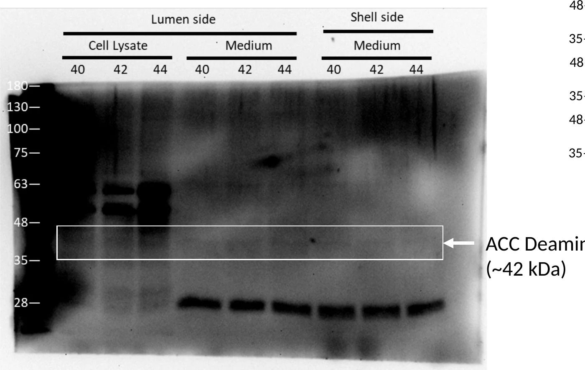
Figure 50. The 40 to 44 hour membrane at full height, the only panel whose ladder resolves. The white box is where ACC deaminase should run. The darkest features on the membrane are elsewhere: a doublet near 63 kDa in two lysate lanes and a band near 28 kDa across all six medium lanes, neither of which is assigned anywhere in our records.
Unwritten · Olivia, Sophia
The wet lab side of protectant design, the mutation, truncation and
codon-optimisation work as it reached the bench, is not written. The
BoPep4 reverse primer has its BpiI and BsaI overhangs recorded,
GAGG and TGTC, and no sequence.
Bioreactor
Nobody on the team had built a bioreactor. Five cycles took a four-part loop
that leaked at the pump head to a machine that held a live culture for
fifty-three hours with nobody opening it. The specification, the bill of
materials and the CAD are on Hardware; the cycles
are here.
Cycle 1 · Prototype I · 6 June 2026 Named failure
The loop reached its flow rate and then leaked at the pump head, and the culture barely grew
Result
94 mL/min held, the run stopped early on a leak, and 2 mL of shell-side medium plated on LB grew nothing.
Changed next
Biocompatible tubing, a magnetic stirrer, and the sampling port moved to the reservoir outlet.
DDesign
Initially, the objective of our design was to establish a functional continuous flow system utilizing a PES hollow fiber membrane. This preliminary build provided initial insights into structural limitations and potential hardware optimizations. The design of our Bioreactor comprises a PES Hollow Fiber Membrane, medium reservoir, Peristaltic pump, and luer valve, offering a simple, continuous flow-through mechanism.
BBuild
Within this first cycle, we utilized a PES hollow fiber protein membrane (lumen volume: ~200 mL) connected to a 500 mL LB medium reservoir containing 300 mL of LB medium, inoculated with 20 mL of a multi-overnight B. subtilis liquid culture.
TTest
Within early phase testing, the peristaltic pump achieved the target flow rate of 94 mL/min; however, the trial was prematurely terminated due to localized medium leakage within the peristaltic pump. We then evaluated microbial viability, yielding final OD600 readings of 0.304 (in-tube) and 0.48 (medium reservoir).
LLearn
The divergent OD600 values between the tube and reservoir indicated poor microbial viability and pointed to two key hardware limitations for the next DBTL cycle. Exhibiting these factors, we hypothesize that the lack of active mixing led to nutrient stratification and cell sedimentation within the reservoir, limiting growth.
Figure 51. Prototype I as drawn by the team on 6 June 2026: four parts, no stirring, no aeration, no pH control.Figure 52. The reason the next cycle happened. Over twenty-seven hours at room temperature the flask passes OD600 2.4 and the reactor never leaves 0.3.
Show detailsThe containment plate, and the three changes this cycle asked for.
To confirm the microbial presence and viability, 2 mL of the medium
was extracted from the Shell side of the Hollow fiber membrane and was
plated on LB agar to examine colony formation. From this, we observed
the absence of colony formation, providing functional proof that our
bioreactor is bio-safe for public agricultural usage.
Figure 53. The shell-side plate from prototype I, with no colony
formation. It is one plate, from one run, and it is the evidence behind
the only containment claim this project makes. The pore size argument
behind it, a 0.2 µm membrane against cells of 0.25 to
1.0 µm, is on Hardware.
Furthermore, to overcome the observed lack of microbial growth, we plan
to incorporate an active magnetic stirring mechanism, inspired by the
Biology laboratory Hot plate magnetic stirrer, to prevent sedimentation
and ensure a homogeneous nutrient distribution. In addition, to improve
the data collection accuracy and minimize contamination risks, we plan
to relocate our initial sampling ports directly to the medium
reservoir’s outlet within our next DBTL cycle.
In order to address the mechanical leakage, we identified the need for
biocompatible tubing (BPT) to ensure higher durability and more stable
sealing between transition points of the pump.
The build step of this cycle is a blank heading in the hardware writing
document, so what is shown above under Build is the apparatus as the
team’s own design paragraph describes it, in their words.
Cycle 2 · Prototype II · 14 June 2026 Closed
Stirring, 37 °C and a sampling port at the reservoir gave the first complete growth curve
Result
The reactor plateaued at OD600 0.8 to 0.9 after about two hours, against the flask’s 0.6 to 0.8 after four and a half.
Changed next
Run it again at 22 °C, on higher-durability BPT tubing.
DDesign
Improving on the previous design, a 200rpm magnetic stir was added to the medium reservoir to prevent sedimentation and ensure a homogeneous nutrient distribution. In addition, the sampling sector was placed closer to the medium reservoir to acquire a more accurate measurement as the reservoir holds much more relative volume compared to the hollow fiber membrane, giving us a more averaged prediction of the total OD of the entire bioreactor module.
BBuild
The same loop with the stirrer under the reservoir and the sampler moved to its outlet. The build step is a blank heading in the source document; the drawing below is the team’s own illustration of the prototype.
TTest
As before, the peristaltic pump maintained the target flow rate of 94 mL/min for the entirety of testing. However, instead of experimenting with room temperature, the bioreactor(experiment) and flask(control) were maintained at 37 degrees Celsius. In contrast to our last attempt, this time the experiment ran successfully, helping us secure the full growth curve of our bacteria, with the bioreactor reaching the plateau phase (OD600 ~0.8-0.9) after 2 hours, and the flask reaching the plateau phase (OD600 ~0.6-0.8) after 4.5 hours.
LLearn
The successful generation of the OD600 growth curve confirmed and justified that adding the continuous magnetic stirring mechanism is crucial to preventing sedimentation and maintaining optimal system efficiency.
Figure 54. Prototype II, 14 June 2026. The two changes are visible: the stirrer under the reservoir and the sampler moved to the reservoir outlet.Figure 55. The first complete growth curve out of the reactor, bioreactor against flask at 37 °C.
Show detailsWhat the team wrote about what comes next, and one thing the cycle cannot say.
Moving forward, the next DBTL cycle will evaluate the system’s
performance and growth kinetics at a reduced temperature of
22°C. Moreover, to ensure the long-term reliability of our
Bioreactor and prevent tube degradation observed in earlier trials,
upgrading to higher-durability BPT tubing is necessary for the next
round of testing.
Cycle 3 · 22 °C with BPT tubing · July 2026 Closed
New tubing, the growth chamber temperature, and the photometer reading the loop instead of a pipette
Result
Steady growth at 22 °C through the photometer, with the leak and degradation problems gone.
Changed next
Instrument the loop: pressure, flow, and a valve that holds when the power is cut.
DDesign
The tubing was upgraded to biocompatible BPT tubing. The system was evaluated at a reduced operating temperature of 22 °C, placing our experimental setup within our plant growth incubator. Furthermore, this test would be utilizing our self-made photometer design.
BBuild
The loop went into the incubator with the printed photometer tower plumbed into the return leg, downstream of the pump, where a longer plumb gives the pump’s sawtooth room to smooth out.
TTest
Not written. The hardware draft marks the test field of this cycle with a placeholder; the run itself is the 434-hour photometer record in the photometer track.
LLearn
Our B. sub is able to grow steadily while passing through our photometer, with our new tubing, at 22 degrees. It was dropped into the reservoir from a large height, creating slight bubbling that helped dissolve oxygen passively. The newly used BPT tubing resolved all leak and degradation issues.
Figure 56. 20 July 2026. The loop with the photometer in it, on
the bottom shelf of the incubator and the plants under test above. The long
photometer run started the next day.
Show detailsOne limitation the team wrote down, and one thing this loop did not have.
A limitation is that it took 200 hours to plateau due to a large drop
that could’ve been caused by contamination.
The same drafts also record that this growth run used a simplified
circulation loop with no hollow-fibre module in it, at about
23 °C. So this cycle proves the tubing, the temperature and the
in-line measurement, and not the membrane. The drop it mentions is the
unexplained dip discussed in the photometer track.
Cycle 4 · Prototypes III to VII · 4 July to 23 August 2026 Partly failed
Scale settled by arithmetic, transmembrane pressure on a screen, and autonomy blocked on sterility rather than electronics
Result
Pressure, flow and a servo pinch valve went on. The magnetic pump and its reservoir were rejected, and neither probe could be got into a sealed vessel cleanly.
Changed next
Run every subsystem at once, on cells.
DDesign
Two questions settled before anything reached the bench. Scale: a hollow-fibre membrane has to run at a wall shear rate of 2,000 to 6,000 s−1, which fixes the cross-flow once the geometry is chosen. And the pinch valve actuator, scored against four criteria agreed before any option was looked at.
BBuild
A pressure transducer on the retentate side on 12 July, a servo replacing the stepper valve, the full rig assembled over four days in July, then a magnetic pump, a cooling reservoir and a cap bored for dissolved-oxygen and pH probes in August.
TTest
Transmembrane pressure was on a screen the same evening the sensor went on, with a heavy pump sawtooth on the trace. The magnetic pump topped out below 200 mL/min against a recommended 263 mL/min and could not lift liquid out of the serum bottle.
LLearn
Autonomy is blocked on sterility, not on electronics. Neither probe body survives autoclaving and the reservoir closes with a rubber septum, and no amount of firmware addresses that.
Figure 57. The system these prototypes converge on, drawn
4 August 2026. The culture loop runs reservoir, pump, pressure
sensor, hollow-fibre module, pinch valve and back, with the sampler and the
in-line photometer on it; the permeate leaves through the membrane and goes
to the plants.
Show detailsThe scale arithmetic, the valve criteria, what each prototype settled, and a documentation failure that changed a process.
The scale question, settled without a test.
Strategy A, scale up
Strategy B, scale down
Module
63 mm by 300 mm, about 1,300 fibres
10 mm by 600 mm, 11 fibres
Membrane area
1.3 m²
0.02 m²
Cross-flow at 2,000 s−1
16.25 L/min
129 mL/min
Cross-flow at 6,000 s−1
48.74 L/min
388 mL/min
Pump available
1.5 L/min
within reach
No test was run because none was needed: the arithmetic settles it by a
factor of ten to thirty, and we scaled down. The valve went the same way.
Four criteria were agreed before any option was scored, so they could not
be bent toward the answer: does it hold when power is cut, how much
holding force against permeate pressure, can we build it from parts
already in the lab, and how much firmware does it need. A stepper
releases when it loses power and the loop is full of live engineered
culture, so the first criterion outranked the other three and decided it
alone. We replaced a valve we had already built with a servo.
What each prototype in this cycle changed, and what it settled.
#
Date
What changed
What it settled
III
4 Jul
Module frozen at the small geometry
Scale settled on arithmetic; specification re-checked against invoices
IV
12 Jul
Pressure transducer on the retentate side, 0 to 1 MPa, read through a divider
Transmembrane pressure on a screen the same evening, with a pump sawtooth on it
V
Jul
Servo pinch valve replacing the stepper
Holding on power loss
VI
16 to 20 Jul
Full rig assembled over four days; module characterised on pure water across eight flow settings, twice
The rig ran; the record of building it did not
VII
5 to 23 Aug
Magnetic pump, cooling reservoir, cap bored for dissolved-oxygen and pH probes
One accepted, two rejected; autonomy blocked on sterility
Figure 58. 12 July 2026, transmembrane pressure on a screen for the first time. Feed 16.73, retentate 2.98, permeate 7.66, transmembrane 2.20 psi. The heavy periodic oscillation on the traces is the finding.Figure 59. 5 August 2026, the first readings off both probes. Both read. Neither is on the reactor, and neither has a fixed-point calibration, so neither counts as calibrated.
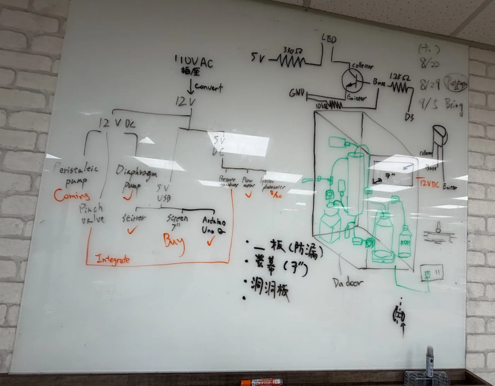
Figure 60. 23 August 2026. Prototype VII worked out as a power tree, with an enclosure, a screen and a door. This is the point at which the reactor stops being a rig.
Freezing the specification meant checking every line against invoices
instead of against memory, and two of our own recorded claims did not
survive. The old specification said the membrane had a 50 kDa
molecular weight cut-off and blocked outer-membrane vesicles. The module
we actually own is 0.2 µm microfiltration, which passes small
vesicles and cell debris along with the roughly 36 kDa ACC
deaminase that is meant to pass. The barrier is cellular, not molecular,
and we withdrew both claims in writing.
Figure 61. 18 June 2026, the prototype II schematic under
review four days after its run. The criticism that came out of this
meeting is what set the scale question.
One failure here is a documentation failure and it changed a process.
Prototype VI was photographed nineteen times across four days, with gaps,
duplicates and no captions, and we cannot reconstruct the assembly order
from them. A future team rebuilding this rig would get the bill of
materials from Hardware and would not get the
order things go together in. The next build is photographed against an
agreed list.
Cycle 5 · Bioreactor v1, prototype VIII · 2 to 4 September 2026 Open
Every subsystem switched on at once, on cells, for fifty-three hours
Result
OD600 0.1738 to 2.4474 AU across 53 h 22 min and 6,387 logged samples, with transmembrane pressure flat at −0.0005 bar after 1,132 L through the loop.
Changed next
Extend the photometer calibration above OD 1.2, repeat with a deliberate fouling challenge, and take the probes out of the sterile boundary.
DDesign
This cycle tests integration, not the optogenetic circuit. ACC deaminase is placed under a constitutive promoter so the strain expresses continuously, which removes light control as a variable. Culture circulates through the lumen side, protectant crosses into the shell side, and cells cannot. Everything else in the loop exists to keep that separation running unattended.
BBuild
The rig went into the 37 °C incubator with the constitutive strain in a 500 mL reservoir, and every subsystem was switched on at the same time and logged to one file, on a 30 s median window so one row of the log covers the same interval on all three signals.
TTest
Engineered B. subtilis was run in the system and ACC deaminase was secreted across the membrane.
LLearn
ACC deaminase was successfully secreted to the shell side but expression is weak.
Figure 62. The rig seven minutes into the run, everything inside the 37 °C incubator. The screen reads OD600 0.1738 AU at 06:58 elapsed.Figure 63. The same dashboard at 53 h 22 min, read against the same blank, which is what makes the two OD600 numbers comparable.
Show detailsThe run read end to end, what the flat pressure does and does not prove, and where the secretion claim stands.
The run at both ends, off the same dashboard.
Reading
At 06:58
At 53:22:39
OD600, in line
0.1738 AU
2.4474 AU
Sample and reference
2070.6 and 236.2 lx, 8.77×
674.8 and 219.3 lx, 3.08×
Bubble and outlier rejection
0 %
0 %
Flow, current window
348.1 mL/min
371.0 mL/min
Cumulative volume
5.1 L
1,132.2 L
Feed, retentate, permeate
0.2412, 0.1874, 0.2133 bar
0.2024, 0.2001, 0.1976 bar
Transmembrane pressure
−0.0007 bar
−0.0005 bar
Pump
Peristaltic at the same duty cycle, forward, for the whole run
Three rows carry most of the result. Bubble rejection stayed at zero for
the whole run, which is the fault the photometer’s first three
builds were destroyed by. Transmembrane pressure did not move: three
sensors that agree to within 0.005 bar at the start still agree at
the end, after 1,132 L. And the pump never changed setting, so the
flow difference between the two columns is the loop’s own
behaviour and not an operator.
A flat transmembrane pressure across fifty-three hours is the first
fouling datum this project has. It is a weaker claim than it sounds: the
membrane is 0.2 µm and the loop runs at essentially zero
pressure difference across it, so this is a fifty-three-hour absence of
fouling under mild conditions, not a fouling model. It rules out the
failure mode that would have stopped the run; it does not predict a
season in a field. One earlier test stands behind it: on 16 August
the module was run on pure water across eight flow settings, twice, once
fitted and once replaced by plain tubing, which showed that the valves,
fittings and flow cuvette account for 46 to 55 % of the total pressure
drop. Not subtracting them would overstate the membrane’s
resistance by nearly a factor of two.
Because the shell side exists and can be sampled, this rig is the
only apparatus in the project that can be asked whether something
crosses a membrane.
In-line photometer
Nobody sells this instrument, so we built it. It reads optical density
straight from the flowing culture, with a reference channel split off before
the sample so drift in the source divides out. Nothing is opened and no sample
is withdrawn. Six cycles, two of them ended by the same class of mistake made
twice.
Cycle 1 · Light path · May 2026 Closed
Find where each optical component belongs before anything is printed
Result
Three measured spacings that became the fixed geometry of every later build.
Changed next
The bench layout became a printed instrument in the loop.
DDesign
We used magnetic helping hands, the clip tool that holds parts locked in place and is normally used for soldering, to hold our 600 nanometer LED in line with a purchased paralleling lens.
BBuild
We locked the LED, slit, beam splitter and both lux sensors in position relative to each other and left only the paralleling lens free to move. Fixing everything else made the lens position the single variable.
TTest
With the other components locked down, we shifted the paralleling lens along the axis until the light path steadily illuminated both sensors. Doing that meant nudging the slit and the sensors slightly as well, to bring the path into line. Then we measured the distance between every component and turned the layout into a drawing our drylab hardware team could develop into a CAD model with everything anchored in place.
LLearn
We measured the tip of the LED to the focal lens at 5.5 cm, the lens to the center of the beam splitter at 10 cm, and the center of the beam splitter to each sensor at 2 cm.
Figure 64. The light path held in helping hands over a rule and a
caliper. This arrangement exists to be measured, not to be used: the three
distances it produced are what every printed build is dimensioned from.
Cycle 2 · V1, horizontal rail Named failure
A horizontal light path gives a bubble nowhere to go
Result
Unusable. The readings stepped with bubbles and the baseline drifted under loose mounts.
Changed next
Stand the light path up, and tighten the component tolerances.
DDesign
The light path stays flat and horizontal, since the bench arrangement was already on one plane. And every component stays independently adjustable, because we did not yet trust the cycle 1 spacings to be final.
BBuild
The whole optical train mounts on a single printed rail. The flow cuvette is plumbed into the recirculating loop with tubing at both ends, so the instrument reads the culture as it passes through.
TTest
Data fluctuation was way too drastic due to bubbling within the flow cuvette as well as high tolerance for lenses and beam splitters. The draft marks the run itself: actual data not found.
LLearn
Bubbles in the flow cuvette were sitting directly in the beam, and with a horizontal path a bubble had nowhere to go. The independently adjustable mounts were also too loose. Adjustability helped during alignment and hurt everywhere else.
Figure 65. Iteration 1. Every optic independently adjustable on a
horizontal rail, which is also a cuvette that a bubble can park in.
Cycle 3 · V2, vertical Named failure
The optics were not the main problem, the blank was
Result
Standing the path up moved the bubbles, and the disagreement with the benchtop instrument turned out to be a procedure, not an optic.
Changed next
Blank on distilled water, which is what the reference instrument is calibrated on.
DDesign
V2 stands the light path up. The LED fires upward through the flow cuvette, so a bubble in the cell rises along the beam axis and leaves the light instead of settling in it. This uses buoyancy to solve the problem rather than relying on flow.
BBuild
A wide square base plate was printed with a mounting adapter for the rail, so the assembly stands rigidly on the bench with the optical axis vertical. The component seats were tightened so the lens and splitter hold their measured positions.
TTest
Two samples were run and compared against the Bio-Drop. The reference channel held at 92.5 lux across both readings. That tells us the source was stable between measurements, so the drop on the sample channel came from the sample and not from the LED.
LLearn
We had been blanking Releaf against growth medium. The Bio-Drop is calibrated on distilled water. The roughly 20% disagreement we had been attributing to our optics was largely a procedural artifact.
Figure 66. Iteration 2, the light path stood up. A bubble now rises
along the beam axis and leaves it, with no mechanism and no maintenance.
Show detailsThe two readings, and a blank protocol our own drafts still disagree about.
Blank: medium. Both readings from the same session.
Sample
Reference
OD
Medium
660 lux
92.5 lux
0 au
2 mL titanium dioxide
495 lux
92.5 lux
62.5 au
Cycle 4 · Angled stand · 19 July 2026 Closed
Ten degrees of tilt, and a reference channel that moved when nothing should have moved it
Result
The two titanium dioxide concentrations separate cleanly, the difference from the Bio-Drop falls from about 20 % to 8 %, and the reference channel moves 6.4 % between blank and sample.
Changed next
Enclose the light path, drive the LED directly, and put real culture through it.
DDesign
Tilting the whole instrument means no surface inside the cuvette is horizontal, so a bubble has a continuous upward path along the wall and nothing flat to rest against. We put the tilt in a wedge under the body rather than building it into the optics.
BBuild
The body sits on a printed wedge with structural support underneath so it does not flex under its own weight. A dual luer valve with syringes is fitted to the loop, used to bleed gas out before the instrument is started.
TTest
The sample channel dropped from 137.63 lux on the blank to 120.44 lux at 1 mL and 111.62 lux at 2 mL, giving readings of 0.3712 and 0.5785 au. The reference channel sat at 17.23 lux on the blank and 18.33 lux on both samples.
LLearn
The reference channel is the bigger finding. It moved 6.4% between the blank and the samples, and the reference beam is split off before the sample, so nothing in the cuvette should be able to change it. A reference channel we cannot trust is a reference channel we cannot correct with.
Figure 67. Iteration 3, tilted ten degrees, so bubbles are driven toward the outlet instead of hanging against the cuvette wall.Figure 68. 19 July 2026, 19:06. The frame the team kept, because it is where the correction started: the reading turned out to be roughly four times the benchtop value on the same sample, and the sample to reference ratio reads 8.18× against a design figure of about 10:1.
Show detailsThe doubling that was not a doubling, and what static samples cannot tell you.
The instrument responds in the right direction and separates the two
concentrations cleanly, so the tilted geometry holds up. Doubling the
titanium dioxide only moved the reading by a factor of 1.56, which we
cannot yet explain from this data alone.
Everything so far has also been static samples held in the cell.
Titanium dioxide tells us the optics work, but it does not move, does not
grow, and does not produce bubbles. The instrument has to hold up on
culture flowing through the loop over a long run before any of this means
anything.
A second blanking error is recorded around the same build: the instrument
read about four times high on the reactor because it had been blanked
through a cuvette that cannot be cleaned in line. It is the same class of
error as cycle 3 and the instrument has no way to detect either,
which is a design gap and not an operator gap. What did improve is the
diagnosis. The first blanking failure took a rebuild to find; the second
took twenty-five minutes, because by then a developer mode could stream
both raw channels and rule the optics out.
Cycle 5 · V4 and the 22 °C growth run · 21 July to 8 August 2026 Closed
Positions fixed, path enclosed, and a growth curve nobody had to interrupt
Result
An unbroken run past 400 hours on engineered B. subtilis 168 at 22 °C, with nothing withdrawn from the loop.
Changed next
Calibrate the instrument against a reference, on a standard that does not grow.
DDesign
Component positions are fixed at their default alignment; every mount surface that touches glass is lined with TPU; and snap-in covers run the full length of the light path from LED to sample sensor, so no room light reaches either detector. A photometer that responds to the lights being switched on is not measuring the sample.
BBuild
The instrument runs on an Arduino UNO Q. Both lux sensors report over the same bus. The interface is a live web dashboard served on the local network, so the run can be watched from any machine without touching the rig.
TTest
A continuous run of engineered B. subtilis 168 at 22 °C, drawn from the bioreactor loop and passed through the flow cell in line, so no sampling event interrupted the culture and no material was removed to measure it. The run passed 400 hours.
LLearn
Noise is tight below about 0.4 OD and ragged above about 0.8, so the useful precision is not flat across the range. The rejection rate moved from 42.9% to 14.3% to 0% within one run, and the rejection rule is not yet written down anywhere.
Figure 69. The long run at ten days and four hours in. The dip and recovery around 150 hours is visible, and the sample to reference ratio is flagged in red at 4.64× against a design figure of about 10:1. That is the instrument marking its own readings untrustworthy while the reactor’s pump was failing.Figure 70. The build the long run was made on, as drawn. Nothing slides any more: the covers, the seats and the wedge are the whole of the difference from iteration 3.
Show detailsThe dashboard snapshots, the fault window, one dip nobody can explain, and three durations in our own records.
Snapshots from the run, all from the same experiment. At 3d 7h 57m the
dashboard read 586 points, OD 0.7661, sample 171.67 lx, reference 26.67
lx, ratio 6.44x, reject rate 42.9%. At 6d 20h 58m it read 1097 points, OD
0.7683, ratio 6.43x, reject 14.3%. At 7d 21h 28m it read 1244 points, OD
1.1804, sample 141.85 lx, ratio 5.32x, reject 0%.
Between roughly 240 and 300 hours the scatter grew by an order of
magnitude, and over the same hours the reference channel fell from
25.8 lux to 9.3, bottoming at 1.4. The first hypothesis was
contamination and it was wrong: the recirculation pump had failed, and
swapping it knocked the optical axis. Part of that window is the reactor
failing and part of it is us, and the reason we can tell the difference is
that the instrument’s own reference channel flagged the window as
untrustworthy while it was happening. We would rather put it that way
than the way we first wrote it, which was that the photometer detected
the pump dying: nobody was rostered to look at the trace daily, and the
fault was noticed late.
A separate, earlier feature, a fall from OD 0.93 to 0.72 between 120 and
160 hours, has no attribution at all. The optical channel was healthy
through it, so it is not the instrument. Lysis followed by cryptic
growth, sporulation and germination, and biofilm sloughing all remain
open. The measurement that would have separated fouling from biology is a
flush and reblank at the end of the run; it was never done, and once the
rig was torn down the chance was gone.
One more thing the draft asks for and does not have: it is still
unresolved whether the reported OD uses the reference channel or only the
sample against the blank. The two disagree, and that has to be settled
before the growth curve is published anywhere.
Cycle 6 · Calibration with titanium dioxide · 23 August 2026 Closed
We expected to need a calibration transform, and the data said not to apply one
Result
Raw output agrees with the benchtop instrument to a median paired difference of 3.8 %, and both track the mass standard at R² above 0.999.
Changed next
Repeat on cells, extend the range, and confirm against the iGEM silicon dioxide standard.
DDesign
Using culture to calibrate would lead to issues in growth time, settling, or cell lysis, leading us to come up with TiO2 suspension as a stable scattering target. The iGEM standard is done with SiO2, but TiO2 performed nearly exactly the same suspended in 1% SDS solution and was much cheaper.
BBuild
The calibration loop consisted of a magnetic stirrer, a peristaltic pump, our photometer, and a 500 mL reservoir, whose cap had holes for the inlet, the outlet, a sampling port, and an air hole that prevented a vacuum forming during sampling.
TTest
Plotted against mass added, both instruments track the standard at R² > 0.999 (Releaf 0.9999, Bio-Drop 0.9998), and plotted against each other the raw points fall along the line of identity, agreeing to a median paired difference of 3.8%.
LLearn
We originally expected the Releaf readings would need a calibration transform; instead the two runs showed that no calibration is needed. Fitting our readings to the Bio-Drop would tie them to the reference instrument’s own measurement error. A calibration step, in other words, could make the readings worse rather than better.
Figure 71. 23 August 2026, the calibration being run. Titanium dioxide is added a milligram at a time into a stirred recirculating loop, both instruments are read at every point, and the values are written down by hand as they come.Figure 72. The two instruments against each other, test 2. The points sit on the line of identity across the range a culture occupies; the fitted slope is 0.942 with R² 0.9997, which is the number the plot itself carries.
Show detailsTwo exclusions made on objective grounds, what the two runs each probed, and one accuracy claim that still has to be reconciled.
Two single-point exclusions were applied, each on objective grounds, and
both are shown as open markers in the figures rather than deleted. In
Test 1, the mg = 37 Bio-Drop reading is a handling error, off the trend
of its neighbors. In Test 2, the mg = 5 Bio-Drop reading violates
monotonicity, it exceeds the readings both above and below it, which is
impossible for an increasing standard. In both cases, the paired Releaf
reading is on trend.
The raw, uncalibrated Releaf output already sits near one-to-one with the
reference and tracks the ground-truth mass standard with a residual
scatter no larger than the Bio-Drop’s: in Test 1, 0.024 OD600 for
Releaf against 0.030 for the Bio-Drop. The SiO2 calibration we
deferred remains available as a future check, but on the strength of the
TiO2 comparison it is a confirmation step, not a dependency.
Cycles 7 and 8 exist in the drafts as headings. Cycle 7 is the silicon
dioxide calibration, deferred. Cycle 8 is a simplified photometer that
removes the paralleling lens by sanding the LED head flat, which one
draft reports as built and proved accurate and another reports as not yet
tested, with the older assembly kept as the final one. Neither is written
up, and no comparison numbers exist, so neither is counted as a cycle
here.
Light plate apparatus
DiOPAL is a testing apparatus, not part of the control loop. It exists to
answer one question: how the wavelength and intensity of applied light affect
protectant production in engineered B. subtilis. Three cycles took
it from two LEDs on a breadboard to an enclosed instrument with software-set
intensity tiers.
Cycle 1 · Dual-wavelength array Closed
Put a green and a red LED in every column and see whether the idea works at all
Result
The concept holds. Nothing about it is quantitative: output was uncontrolled and external light was not blocked.
Changed next
Measure every LED, sort them into matched groups, and shield the cultures.
DDesign
Put a green and a red LED in each column so we can switch between them quickly and exercise the on and off control of protectant production directly. Nothing is calibrated at this stage, because the question is whether the concept works at all before we spend effort making it precise.
BBuild
Dual LED per column, allowing for quick adjustment from Green to Red light output. Wire management prints. The array was driven straight from a breadboard, and the build step of this cycle is marked in the drafts as needing construction photos and a board layout.
TTest
Not written. The drafts mark this cycle’s test with a placeholder, and no run on culture is recorded against this build.
LLearn
Output consistency between LEDs was not controlled. External light was not blocked.
Cycle 2 · Matched output and light shielding Closed
Twenty LEDs sold as identical spread by a quarter, so the intensity tiers had to come from software
Result
Green ran from 2.01 to 2.54 kLux and red from 360 to 438 lux, spreads of 26 % and 22 %. Sorted into fours, each group holds to about 1 to 2 %.
Changed next
Set the tiers by pulse-width modulation, and enclose the electronics.
DDesign
The approach is to measure the lumen output of every LED individually and use that to identify units with similar internal resistance. From the matched units we form three groups of four per wavelength, one group per intensity tier, arranged as columns. Coverage was added to block external light, so that the intensity a culture receives is the intensity we set.
BBuild
Every LED was driven at 5 V and measured individually on a lux meter using a printed sensor fixture, so each reading is taken at the same distance and orientation. Each LED carries a tag made of its row and its column.
TTest
All twenty green LEDs and all twenty red LEDs were read at 5 V, one at a time, and the two grids are in the details below. Sorting those into groups of four by output gives the matched sets the tiers are built from.
LLearn
The separation between tiers is smaller than we need. Green low to green high is about 7% and red low to red high is about 10%. That is the natural spread of the parts, sorted, rather than three distinct light levels. The tiers therefore have to come from the PWM duty cycle rather than from LED selection.
Figure 73. The printed sensor fixture that made the measurements
comparable: one LED at a time, at the same distance and orientation, driven
at 5 V. Forty readings came off this fixture.
Show detailsThe full measurement grids, and the group that would not tighten.
All 20 green LEDs at 5 V, in kLux, by row and column.
1
2
3
4
5
A
2.54
2.19
2.33
2.40
2.40
B
2.37
2.11
2.34
2.48
2.33
C
2.01
2.37
2.38
2.42
2.36
D
2.33
2.05
2.35
2.45
2.20
All 20 red LEDs at 5 V, in lux.
1
2
3
4
5
A
431
371
424
393
438
B
400
380
430
397
360
C
410
410
360
416
397
D
411
390
360
388
428
The green high group spans 2.38 to 2.50, roughly 5%, which is five times
looser than the other two green groups. It is the leftover group, made of
what did not match anything else.
Cycle 3 · Enclosed and software-controlled Open
Twenty-four cultures, six defined conditions, and a unit problem that redefined what working means
Result
An instrument that can be handed to someone else: enclosed electronics, code-set intensity, and a holder that fixes the distance between LED and culture.
Changed next
Measure photon flux rather than lux, check uniformity between wells, and run the circuit under it.
DDesign
An outer frame print houses the wiring and the Arduino, so the electronics are enclosed rather than sitting loose on the bench. Light intensity is varied in code, so a run is defined by a set of values rather than by a physical adjustment someone has to remember. Slider prints allow assembly and disassembly without tools. A tall print holds the test tubes at a fixed position under the array, so the distance between LED and culture is the same every run.
BBuild
Control runs from an Arduino Uno R4 WiFi. PWM signals from the Arduino drive a MOSFET for each LED group, giving six defined light conditions per run.
TTest
Not written for this build. What is recorded is a repair: one column of green and red stopped answering its MOSFET and two columns ran very weak, and changing the MOSFET fixed the light.
LLearn
Our initial measurements were recorded in lux, but lux is weighted for human vision and therefore is not an appropriate measure of photon flux for comparing the 520 nm green and 660 nm red light used by our system.
Figure 74. The enclosed array, twenty-four positions lit under six
defined conditions. Each condition holds a fixed dose for the whole of a
run: the apparatus characterises the switch, it does not control it.
Show detailsWhat the team now counts as success, and what has not been measured.
This changed our definition of what it means for DiOPAL to be functional.
Having 24 LEDs turn on and produce different readings is not enough. We
need to establish the actual photon flux at each condition, verify
illumination uniformity between wells, and determine whether the selected
conditions actually produce the expected changes in protectant
expression.
The last of those is the induction run the whole page waits on. The
apparatus is ready for it and the Level 2 strain exists. The
assembly and disassembly is also recorded as slow, and the jumper wire on
the MOSFET spike as loose, which is what the repair above is about.
Plants and delivery
The plant work is its own record and it lives on Plants.
What belongs here is the engineering in it: three phases that each changed how
the next experiment was run, on agar, before anything reached soil.
Phase 1 · Agar, salt and trehalose · May to August 2026 Closed
Eight experimental sets to find a salt dose that injures a plant without killing it
Result
A usable stress window on agar, and a protectant dose between the one that was toxic and the one that did nothing.
Changed next
With a window that works, the question became when to apply the protectant.
DDesign
In total, we conducted 8 experiments under NaCl-induced salt stress. Among these, six sets evaluated the non-reducing disaccharide trehalose, which has been shown to have a protective effect under salinity stress. The remaining two sets used commercially available CH Biotech’s peptide as our positive control. One additional set used purified ACC deaminase to against salinity stress.
BBuild
Arabidopsis on half-strength MS agar, stratified, then transferred onto plates carrying the salt and the protectant. On Dr. Kyle’s advice the plates went from horizontal to vertical, which is what made root length measurable.
TTest
Our pre-test conditions of experimental set 1-2 were surrounded against testing out protocols and the initial response of plants to NaCl, which is why we only used 50mM, 100mM, and 150mM of NaCl and 0.5mM and 1mM of trehalose.
LLearn
We soon realized that the 150mM of NaCl was too strong for the plants and they dried out easily. Experimental groups 1 and 2 revealed that 1mM was too toxic and 0.5mM was insufficient against strong salt levels, so we considered manipulating the concentration in between the two to reach a balance.
The full set-by-set record, with root length, fresh weight and chlorophyll
for every condition, is on Plants.
Phase 2 · CH Bio peptide, treatment timing Closed
Before, during or after the salt: the timing question the bioreactor has to answer
Result
At 75 mM the co-treatment group did best; at 100 mM the after-treatment group did.
Changed next
The same design, run with the protectant our own bacteria make.
DDesign
CH bio peptide application is categorized into 3 treatment timing groups: pre-treatment, co-treatment, and after-treatment. Different treatment timings are essential connecting to our project goal, to supply protectants at the optimal timing before stress harms the plants. These 3 treatment timing groups and the control group (no protectant) were each subjected to three NaCl concentrations (0 mM, 75 mM, and 100 mM), giving a total of 12 experimental conditions.
BBuild
On the technical side, we applied the protectant directly onto the surface of the agar by adding 3mL then removing 2mL of excess to achieve a 1ml of final protectants added (the surface tension of the agar causes uneven distribution of protectant, therefore we added a larger volume of protectant to completely submerge the surface first, then suck out the excess protectants lastly).
TTest
On day 0, Arabidopsis seeds were vernalized on ½ MS neutral agar for 4 days at 4°C, then transferred to a growth chamber for 4 days germination. Protectants applications were initiated subsequently starting from Day 8, and administered at 24-hour intervals between each treatment timings. Treatment timings can be considered as another set of days (Day -1: pre-treatment, Day 0: NaCl+co-treatment, Day 1: after-treatment).
LLearn
Within 75mM NaCl both treatment groups exhibited better growth in terms of leaf area and quantity of roots, while co-treatment demonstrates the best rescue effectiveness. Within the 100mM NaCl group, after-treatment demonstrates brighter green, larger leaf area, and higher relative chlorophyll content.
That is the result the reactor has to be able to act on: the moment
protection is worth making depends on how hard the stress is, which is the
argument for a machine that makes protectant on demand rather than a bottle
that was filled last month.
Phase 3 · ACCD pretest · experimental set 8 Named failure
The first test of our own protectant on a plant was lost to contamination
Result
Contaminated plates, and data predicted inaccurate even with fresh weight normalization.
Changed next
Filter the protein under the laminar flow hood, and blot every batch before it touches a plant.
DDesign
Following the production of ACCD in our engineered bacteria, we began running tests directly on agar through an ACCD pretest. Data collected include fresh weight, chlorophyll content, and image documentation.
BBuild
ACC deaminase secreted by the engineered B. subtilis and passed through a 0.22 µm filter, applied with a sterilised spray nozzle held 10 cm from the plate, three sprays into three equal sections. Germination was extended from four days to ten on Prof. Cheng’s advice, to use stronger plants.
TTest
However, due to contamination of the agar plates, it is predicted that the data may be inaccurate even with fresh weight normalization.
LLearn
We, along with other consulted professors, suspected that our ACCD could have been contaminated through the filtering process since it was done in the lab setting and not under the laminar flow machine.
What we learned across cycles
Across twenty-three cycles in seven subsystems, what stopped us was usually
not what we had designed against.
Verify the donor, not the product. Four of the six cloning cycles are
variations on one problem: a Golden Gate reaction fed unverified DNA gives a
screen where a failed assembly and a PCR artefact look the same. The day
pGEM-T Easy cost us bought the end of that ambiguity.
Build the control alongside the thing you want. Every light-gated cargo
was also built constitutively. Because of that the protein work, the reactor
run and the plant spray could all start before the switch existed, and a
negative result has one explanation fewer.
A measurement can be wrong in a way the instrument cannot see. The
photometer read 20 % out and then four times high, and both times the optics
were fine and the blank was wrong. The fix that mattered was not optical, it
was a developer mode that streams both raw channels so the optics can be ruled
out in twenty-five minutes instead of a rebuild.
Parts sold as identical are not. Twenty green LEDs spread by 26 %.
Sorting them into matched fours got each group inside about 1 %, and told us
that the intensity tiers had to come from software rather than from selection.
Score a design on its weakest term. A codon optimiser ranking on a sum
bought a large gain at the start codon with a total loss at the ribosome
binding site. Changing the objective to the weaker of the two moved the
bottleneck 7.9-fold on the same sequence.
Audit the method that chose the design, not only the design. The peptide
audit retracted five claims, one of them after the DNA had been ordered, and
the measurement that caught it was a flood fill that needed no docking and no
simulation.
Ask somebody who knows before you rebuild. Half the motive for the
module 1 rebuild, the recombination worry, was retired by one conversation
with Professor Huang. The other half stood, and the rebuilt module is the one
in the circuit.
Change one thing. Prototype II changed three at once and worked, and we
still cannot say which change did it. It is recorded here so nobody reads it as
proof that stirring alone fixed the reactor.
The hard part of autonomy was sterility. We went into the instrumented
prototype expecting the difficulty to be driving a pump from a microcontroller.
It was getting a non-autoclavable probe into a sealed vessel.
Record what a failure cost, in writing. Twelve places where our own documents
disagree are boxed on this page instead of being settled here, because settling
them is a decision for the people who ran the experiment.
What is still open
Does green light switch it on?
A light plate run on the Level 2 strain, green
against dark, reading the output cargo. The apparatus is built and the strain
exists. Until that run happens, every sentence here about the switch is a
statement about the design.
Which promoter does module 2 want?
PliaG and PlepA both exist, and so do the two
Level 2 devices built on them. A dose-response curve is what picks
between them, and it is the same experiment as the one above.
Are the Level 2 constructs clean?
Nine correct junctions across three clones say four modules are joined in the
right order. Sequencing a joined plasmid end to end is what would let us say
it carries no mutation, and that cell of the build record is empty for both
devices.
What does the reactor blot show?
Nine time points, three sampling sites, a named antibody, and three different
readings of the result in our own documents. Reading it once, properly, is
the shortest path from this page to a claim.
How does the model get its constants?
The model prescribes a light dose from Hill
parameters measured on a chemically induced version of this circuit. Ours
runs on constitutive promoters, so those parameters have to be measured again
on the final construct before the dose it prescribes means anything. That is
the same induction run as the first question here.
WB800N or 168?
The plan calls for the comparison and it has never been run. Every number on
this page is strain 168.
Gaps in this recordSections the drafts leave unwritten, with the person who owns each one. This list comes off before the wiki freeze.
Where a section has not been written yet, the page says so in the place the
section belongs, with the person who owns it. Nothing is filled in with
plausible sentences to hide a gap. The open ones, at the time of writing:
Chloe, cycle 2: the test and learn steps of the first SubtiToolKit attempt. The source document goes straight from the build into cycle 3.
Chloe, module 2: the second divergence from Castillo-Hair et al., and whether the ribosome binding site is RBS0 or sRBS2 and MF002.
Chloe, module 3: the build sentence and the learn field, both of which stop mid-sentence.
Sophie C, module 4: four constructs are described and three are listed.
Sophie C, module 1: the expected amplicon size for the Level 0 screen.
Olivia, Sophia: the wet lab side of protectant design, and the BoPep4 reverse primer sequence.
Hardware: the build steps of bioreactor cycles 1 and 2, the test step of cycle 3, and the light plate apparatus test steps, all blank headings in the drafts.
Hardware: photometer cycles 7 and 8, the silicon dioxide calibration and the simplified optics, exist as headings only.
Everyone: two reference holes. Which revision of the MoClo standard the circuit was first drawn to is not in our records, and six kit and Registry parts this page names have no source line: B0015, L3S2P21, RiboJ, EEBD, AmilCP and sfGFP. Both go in the shared Zotero library, GEMS-Taiwan 2026 to Wetlab, in APA 7.
Where the rest of the record lives: the reactor and photometer as built are on
Hardware, the first attempts and what each failure cost
are on Development, the parts on
Parts, the peptide design on
Peptide Design and
Protein Design, the assays on
Plants, and the numbers that come out of all of it on
Results.
References
Castillo-Hair, S. M., Baerman, E. A., Fujita, M., Igoshin, O. A., &
Tabor, J. J. (2019). Optogenetic control of Bacillus subtilis gene
expression. Nature Communications, 10(1), 3099.
https://doi.org/10.1038/s41467-019-10906-6
Haller, D. J., Castillo-Hair, S. M., & Tabor, J. J. (2025). Optogenetic control of
B. subtilis gene expression using the CcaSR system.
Methods in Molecular Biology, 2840, 1 to 17.
https://doi.org/10.1007/978-1-0716-4047-0_1
Weber, E., Engler, C., Gruetzner, R., Werner, S., & Marillonnet, S. (2011).
A modular cloning system for standardized assembly of multigene constructs.
PLoS ONE, 6(2), e16765.
https://doi.org/10.1371/journal.pone.0016765
Caro-Astorga, J., Rogan, M., Malcı, K., Ming, H., Debenedictis, E., James, P.,
& Ellis, T. (2025). SubtiToolKit: A bioengineering kit for
Bacillus subtilis and Gram-positive bacteria.
Trends in Biotechnology, 43(6), 1446 to 1469.
https://doi.org/10.1016/j.tibtech.2025.02.004